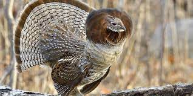
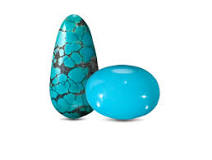
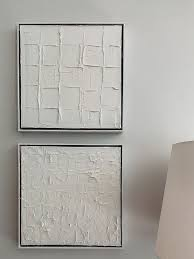
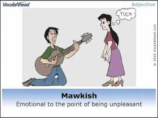
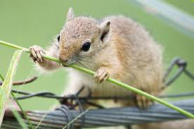

barbarous
['bɑ:bərəs]
bar([bɑ:(r)]): v.禁止，阻挡；n.条，棒
barb([bɑ:b]): n.(鱼钩的)倒钩；严厉的批评
arba(): 美国兔仔繁殖者协会（American rabbit breeders' association）
barb(bɑ:d): n. 倒钩\nvt. 装倒钩于
barba('bɑ:bә): 芒
barbar(): n. （男）理发员
barbaro(): n. (Barbaro)人名；(法、意、俄)巴尔巴罗；(西)巴尔瓦罗
baro(): n. 气压，大气压力\nn. (Baro)人名；(法、西、意、葡、塞、罗、土、阿拉伯、毛里塔)巴罗\nadj. 气压的
barou(): [人名] 巴鲁; [地名] [尼日尔] 巴鲁
rous(rajs): n. 劳斯（姓氏）
bonhomie
[bɔnɔ'mi:]
homie('hәjmi): a. 家庭似的, 舒适的, 自在的
clamp
[klæmp]
clam: n.蛤蜊，蛤肉；守秘密之人
clasp: n.钩子，釦子；紧握

cramp: n.铁箍，夹子；v.把…箍紧
carp: n.鲤鱼；v.吹毛求疵
claim: v.要求或索; 要n.声称拥有的权力
clamor: v./n.吵闹，喧哗
clash: v.冲突，撞击
clay: n.黏土
clip: n.夹子，别针；v.修剪
cram: v.填塞，塞满；临时抱佛脚，为考试而学习
damp: v.减弱，制止振动；a.潮湿的
lap: v.舔食；泼溅
limp: v.跛行；a.软弱的，松软的
lump: n.一块，肿块；v.形成块状
stamp: v./n.跺脚；在…上盖印
swamp: n.沼泽；v.使陷入；淹没
tamp: v.捣实，砸实
plump: adj. 颇胖的，丰满的
slump: v. 猛然落下；暴跌
tramp: v. 重步走；长途跋涉
clam([klæm]): n.蛤蜊，蛤肉；守秘密之人
clam(klæm): n. 蛤, 沉默寡言的人\nvi. 捞蛤
lamp(læmp): n. 灯\nvt. 照亮\n[计] 逻辑模拟分析系统
compost
['kɔmpɔst]
compose: v.写，创作；组成
comport: v. 举止(以一种特殊方式表现)
compact: a.结实的；简洁的；n.合同，协议
compass: n.指南针，罗盘；界限，范围
composed: a.镇定的，沉着的
composer: n.作曲家
comp(kɔmp): [计] 电脑及相关知识; DOS内部命令:比较两个文件的内容
compo('kɒmpәu): n. 混合涂料, 组合物, 工伤赔偿费\n[机] 熟粘土砂
compos(): n. 混合涂料（compo的复数形式）
post(pәust): n. 柱, 杆, 准星, 邮件, 邮政, 标竿, 职位, 岗位, 哨所, 兵营\nvt. 张帖, 邮递, 公布, 登入帐, 使熟悉, 布置\nvi. 快速行进\nadv. 急速地\n[计] 记入; 登记, 上电自检
desultory
['desəltəri]
sult(): n. 饥饿（丹麦电影名）
Tory('tɒ:ri): n. 托利党党员, 保守党员, 亲英分子\na. 保守分子的
ultor('ʌltɔ:): 阳极, 最后[最高, 第二]阳极, 最高压级(指阴极射线管内的阳极)
farce
[fɑ:s]
arch: n.拱门，拱形
bare: v.暴露；a.赤裸的
barge: n.平底货船，驳船
carve: v.雕刻
facet: n.(宝石等的)小平面；侧面
fade: v.褪色，消失，凋谢
faucet: n.水龙头
faze: v.使…狼狈，折磨
flare: n./v.(火焰)摇曳，闪耀
forge: n.铁匠铺；v.锤炼；伪造
forte: n.长处，擅长；a.(音乐)强音的
lace: n.鞋带，系带；网眼花边，透孔织品
lance: n.长矛；鱼叉
mare: n.母马，母驴
parch: v.烘烤；烤焦
pare: v.削；修剪；削减，缩减
parse: v.对…作语法分析
tare: n.莠草，杂草
fake: v. 伪造；佯装
arce(): n. 阿尔塞（人名）
fusillade
['fju:zi`leid]
sill([sil]): n.门槛；窗台
fusi(f'ju:zaɪ): [医]（单fusus）梭形物
fusil('fju:zil): n. 燧发枪
lade(leid): vt. 装满, 装载\nvi. 装货
sill(sil): n. 基石, 槛, 窗台, 岩床, 海底山脊, 梁
silla(): [地名] [韩国·朝鲜] 新罗; [地名] [西班牙] 锡利亚; [地名] [爱沙尼亚、墨西哥] 锡拉
gauche
[gəuʃ]
cache: n.贮藏处；v.将…藏于
gauge: n.标准规格；测量仪；v.测量
auch(): n. 欧什（法国西南部热尔省首府）
gauch(): [人名] 高奇
grouse
[graus]
arouse: v.唤醒；激发
carouse: n.狂饮寻乐
douse: v.把…浸入水中；熄灭
gouge: n.半圆凿；v.挖出；敲竹杠
grease: n.(炼出的)动物油脂；滑脂
groove: n.凹线；(刻出的)线条；习惯
grope: v.摸索，探索
gross: a.总的；粗野的；n.整个，全部
grouch: n.牢骚，不满
group: v.使…集合；n.群，集
grove: n.小树林，树丛
profuse: a.很多的；浪费的
记：教授🧑🏫用的 很多
prose: n.散文
ruse: n.骗术，诡计，谋略
troupe: n.歌唱团，剧团
browse: v. 吃嫩叶或草；浏览；n. 嫩叶；嫩芽
souse: v. 浸在水中，使湿透
Ouse(): [网络] 乌斯河；百家；锻曞悙
rous(rajs): n. 劳斯（姓氏）
rouse(rauz): n. 觉醒, 奋起, 干杯\nvt. 唤醒, 鼓舞, 激动, 使振奋, 惊起\nvi. 醒来, 奋起

harbinger
['hɑ:bindʒə]
bin([bin]): n.大箱子
bing(biŋ): n. 堆；材料堆；微软公司的搜索引擎产品
binge(bindʒ): n. 狂闹, 狂欢
binger(): [人名] 班热
harbin('hɑ:rbin): n. 哈尔滨（黑龙江省会）
Inge(): 英奇（英格兰人姓氏）
impecunious
[`impi'kju:njəs]
imp([imp]): n.小鬼；顽童
IOUs(): suff. 有…性质的；属于…的；如…的
pecunious(pɪk'ju:nɪəs): 有钱的；富有的
unio('ju:niәu): n. 珠蚌属动物
imprecation
[impri'keiʃ(ə)n]
implication: n.暗示
imp([imp]): n.小鬼；顽童
ation(eɪʃən): 增强辐射, 文明阶段
cati(): 计算机辅助电话访谈
cation('kætaiәn): n. 阳离子\n[化] 阳离子; 正离子
ecat(ə'kɑ:t): [医][=emission computed assisted tomography]发射计算机体层摄影术
tion(): n. 象征式互动；支票电托收
intestate
[in'testeit]
instate: v.任命，安置
integrate: v.使成整体
intestine: n. 肠；adj. 内部的
estate(i'steit): n. 不动产, (人生的)阶段, 阶层, 财产\n[经] 房地产, 遗产, 财产
inte(): n. （法）强度
stat(stæt): [电] 静
state(steit): n. 州, 状态, 情形, 国家, 政府, 领土, 国务, 社会地位\na. 国家的, 正式的, 礼仪用的, 州的\nvt. 说明, 陈述, 规定\n[计] 状态
tate(teit): n. 塔特（姓氏）
test(test): n. 测试, 试验, 化验, 检验, 考验, 甲壳\nvt. 测试, 试验, 化验\nvi. 接受测验, 进行测试
testa('testә): [医] 种皮, 外种皮(植物); 壳, 甲壳, 介壳(虾、蟹、蛤、昆虫等的)
testate('testeit): a. 留有遗嘱的\nn. 留有遗嘱的死者, 立遗嘱之人
largess
['lɑ:dʒes]
largesse: n.慷慨援助；施舍
caress: n.爱抚，抚摸；v.爱抚或抚摸某人
harness: n.马具；v.束以马具；利用
arge(): n. 阿尔该（人名）
gess(): [人名] 格斯
large(lɑ:dʒ): a. 大的, 大量的, 宽大的, 广博的\nadv. 大大地, 夸大地
munificence
[mju:'nifisəns]
ence(): 具...的行为,状态
fice(fais): n. (feist的变体)<美方>杂种小狗
muni('mju:ni): n. <美俚>市政公债
munif(): [人名] 穆尼夫
unif('ju:nɪf): [医][=uniformity]均匀性，均匀度
unific(ju:'nifik): a. 倾向于联合(或统一、一致)的,使联合(或统一、一致)的
necropolis
[ne'krɔpəlis]
metropolis: n.大城市
crop(krɒp): n. 农作物, 产量, 平头\nvt. 收割, 修剪, 种植\nvi. 收获\n[计] 裁剪
poli(): n. 波里（人名）
polis('pәulis): n. 城邦
pawn
[pɔ:n]
fawn: n.未满周岁的小鹿；v.巴结，奉承
pan: v.严厉批评
spawn: n.(鱼等)卵子；v.大量生产
yawn: v.打呵欠
awe: n./v.敬畏
awl: n.(钻皮革的)尖钻
ban: n.禁令
barn: 
down: n.绒毛；汗毛
hawk: n.隼，鹰
pack: n.狼群；一群动物
pact: n.协定，条约
paean: n.赞美歌，颂歌
pagan: n.没有宗教信仰的人；异教徒
pall: v.令人发腻，失去吸引力
pang: n.一阵剧痛
pare: v.削；修剪；削减，缩减
pen: n.围栏；监禁；母天鹅
plain: a.简单的；清楚的；n.平原
pun: n.双关语
span: n.跨度；两个界限间的距离
tan: v.鞣(革)
vain: a.自负的；徒劳的
wan: a.虚弱的；病态的
yarn: n.纱线
bawl: v. 大叫，大喊
damn: v. 严厉地批评，谴责；adj. 该死的
pane: n. 窗格玻璃
yaw: v. (船、飞机等)偏航
poignant
['pɔinənt]
pregnant: a.怀孕的；充满的
nant(nænt): n. 小河谷
protean
['prəutiən]
protest: v./n.抗议，反对
rote([rəut]): n. 死记硬背
Protea('prәjtiә): [医] 南非山龙眼属
rote(rәut): n. 机械性的背诵, 死记硬背
puffery
['pʌfəri]
buffer: v. 缓冲，为…冲当缓冲器
fery(): [人名] 费里
puff(pʌf): n. 一阵喷烟, 肿块, 喘息\nv. 喷出, 张开, 吹捧, (使)充气, 喘气, (使)骄傲, (使)膨胀
puffer('pʌfә): n. 喷烟的人, 吹嘘的人, 小绞车工\n[法] 吹捧者, 抬价人, 加价人
purgatory
['pə:gətəri]
nugatory: a.无价值的，琐碎的
ator(): 实际接收时间（Actual Time Of Reception）
gato(): n. (Gato)人名；(西、葡)加托\n起飞时载油量（=gasoline at take off）
gator('ɡeitә): n. 短吻鳄
purga('puә^ә): n. [气]拨格风(发生在西伯利亚北部冻原地区的冬季强风暴)
Tory('tɒ:ri): n. 托利党党员, 保守党员, 亲英分子\na. 保守分子的
Urga('jә^ɑ:,-^ә): 库伦(现称乌兰巴托)
pygmy
['pigmi]
palmy: a.繁荣的；棕榈的
querulous
['kweruləs]
quer(): a. （德）横的
skittish
['skitiʃ]
skirmish: n.小战，小争吵
skit([skit]): n.幽默讽刺短剧
kitt(): n. 小猫, 软毛小动物, 软毛小动物的毛皮
skit(skit): n. 讽刺文, 戏文, 小喜剧
tish(): n. (Tish)人名；(英)蒂什
stoic
['stəuik]
attic: n.阁楼，顶楼
soil: n./v.弄脏，污损
spoil: v.损坏，破坏；溺爱
staid: a.稳重的，沉着的
stain: v.玷污；染色
static: a.静态的，呆板的
stir: v.刺激
stock: a.普通的，惯用的；n.存货
stoke: v.给…添加燃料
stolid: a.无动于衷的
stout: a.肥胖的；强壮的
strip: v.剥去；n.狭长的一片
toil: v./n.辛苦，辛勤劳作
tonic: n.增进健康之物，补品；a.滋补的
toxic: a.有毒的，中毒的
stoop: v. 俯身；降低身份
Stoic('stәuik): a. 斯多葛派的, 禁欲主义的, 不以苦乐为意的, 坚忍的, 淡泊的\nn. 斯多葛派学者, 画廊派的人, 禁欲主义者, 不介意苦乐的人, 高度自制的人
tautological
[`tɔ:tə'lɔdʒikəl]
log([lɔg]): n./v.日志，记录；n.一段大木头；圆木
taut([tɔ:t]): a.绷紧的
auto('ɒ:tәu): n. 汽车\npref. 表示"自己"、"本身", 表示"自己的", 表示"自动的"
logi(): n. 罗技（鼠标制造商）
logic('lɒdʒik): n. 逻辑, 逻辑学, 推理的方法, 推理, 逻辑性\n[计] 逻辑
logical('lɒdʒikәl): a. 合乎逻辑的, 合理的\n[法] 逻辑的, 符合逻辑的
taut(tɒ:t): a. 拉紧的, 整洁的, 紧张的
tautologic(): [网络] 重言式
tolo(): n. (Tolo)人名；(意)托洛
tender
['tendə]
fender: n.挡泥板；护舷的垫子等
render: v.呈递，表现；提供
tinder: n.火绒，火种
cinder: n.余烬，矿渣
hinder: v.阻碍，妨碍
meander: v.蜿蜒而流；漫步
pander: v.怂恿，迎合(不良欲望)
ponder: v.仔细考虑
sunder: v.分裂，分离
teeter: v.摇摆，踌躇
temper: v.锤炼；缓和；n.脾气
tend: v.照料，看顾
tenet: n.信念；信条；教义
tenor: n.男高音；要点，要旨
tether: v.用绳或链拴住(牲畜)；n.(拴牲畜的)绳或链；限度，范围
tinker: n.补锅工人；v.拙劣修补
vendor: n.小贩
veneer: n.(镶于劣质东西上的)镶面板；外表
gander: n. 雄鹅；笨人；v. 闲逛
tend([tend]): v.照料，看顾
ende(): [地名] [印度尼西亚] 英德
ender(): n. 安德（游戏中的人物名）；恩德（男子名）
tend(tend): vi. 走向, 有某种的倾向, 易于, 照顾, 注意\nvt. 照料, 护理
tende(): [地名] [法国] 唐德
tined
[taind]
biped: n.二足动物
linen: n.亚麻织品，亚麻布
pied: a.杂色的
pine: n.松树；v.(因疾病等)憔悴；渴望
rind: n.(西瓜等)外皮
sinew: n.腱，肌肉)；力量
tend: v.照料，看顾
tenet: n.信念；信条；教义
timid: a.胆怯的
tinder: n.火绒，火种
tinker: n.补锅工人；v.拙劣修补
tint: n.色泽；v.给…淡淡地着色
tire: n.轮胎(tyre)；v.疲劳
tinge: v. 染色；使带气息
tine(tain): n. 齿, 尖头
ubiquitous
[ju:'bikwitəs]
iniquitous: a.邪恶的，不公正的
quit(kwit): vi. 离开, 辞职, 停止\nvt. 离开, 放弃, 使解除, 停止\nn. 离开\n[计] 结束, 退出
quito('ki:tәu): n. 基多（厄瓜多尔的首都）
tous(): n. 淘气小熊（品牌名）
ventral
['ventrəl]
venal: a.惟利是图的，贪赃枉法的
venial: a.(错误等)轻微的，可原谅的
vent([vent]): v.发泄(情绪)；开孔；n.孔，口
tral(): 黄苯甲哌甲硫酸盐
vent(vent): n. 排气口, 出口, 通风孔, 发泄\nvt. 发泄, 排出, 给...开孔
virile
['virail]
rile: v.使…恼火，激怒
viable: a.可行的；能活下去的
vile: a.恶劣的，卑鄙的
viral: a.病毒性的
girdle: n. 腰带；转绕物；v. 环绕
simile: n. 明喻
rile([rail]): v.使…恼火，激怒
rile(rail): vt. 搅浑, 惹怒, 使焦急
writ
[rit]
grit: n.沙粒；决心，勇气；v.下定决心，咬紧牙关
wit: n.智力，机智
wrist: n.腕，腕关节
whit: n. 一点儿，少量
aria: n.独唱曲，咏叹调
arid: a.干旱的；枯燥的
bait: n.诱饵；v.逗弄；激怒
bit: n.钻头
brat: n.孩子；顽童
bruit: v.散布(谣言)
emit: v.放射(光、热、味等)
flit: v.掠过，迅速飞过
fret: n./v.(使)烦躁，焦虑
gait: n.步法，步态
grim: a.冷酷的，可怕的
grin: v.露齿而笑
knit: v.编织
merit: v.值得
omit: v.省略，遗漏；疏忽
prim: a.端庄的，整洁的
rib: n.肋骨；伞骨
rift: n.裂口，断裂；矛盾
rig: v.欺骗，舞弊，伪造
riot: v.参加暴动
rite: n.(宗教的)仪式
skit: n.幽默讽刺短剧
trait: n.人的显著特性
trim: v.修剪；a.井井有条的
trio: n.三重奏，三重唱；三人一组
trite: a.陈腐的，陈词滥调的
waft: v.飘浮，飘荡
want: n.缺乏，贫困，需要
whet: v.磨快；刺激
whim: n.多变，怪念头
wilt: v.使…凋谢，枯萎
wry: a.扭曲的；冷嘲性幽默的
brim: n. (杯)边，缘；v. 盈满
prig: n. 自命不凡者，道学先生
rip: v. 撕裂，撕破
slit: v. 撕裂；n. 裂缝
wail: v. 哀号，痛哭
wig: n. 假发
wont: n. 习惯，习俗

wraith: n. 幽灵；骨瘦如柴的人
wrath: n. 愤怒，大怒
addle
['ædl]
saddle: n.鞍，马鞍
waddle: v.(鸭子等)摇摇摆摆地走
adage: n.格言，古训
adobe: n.泥砖，土坯
adore: v.崇拜；热爱
agile: a.敏捷的，灵活的
amble: n./v.漫步，缓行
ample: a.富足的；充足的
axle: n.轮轴(连接两个车轮的轴)
coddle: v.溺爱；悉心照料
dawdle: v.闲荡，虚度
handle: n.柄，把手；v.处理
idle: a.(指人)无所事事的；无效的；v.懒散，无所事事
meddle: v.干涉，干预
puddle: n.水坑，洼
riddle: n.谜语
adduce: v. 给予(理由); 举出(例证)
cuddle: n./v. 搂抱，拥抱
huddle: v. 挤成一堆；n. 一堆人(杂物)
muddle: n. 混乱，迷惑
peddle: v. 兜售
sidle: v. (偷偷地)侧身而行
twaddle: n. 胡说八道，瞎扯
amethyst
['æmiθist]
meth(meθ): n. 甲安菲他明（一种兴奋剂）
thys(): (thy 的复数) pron. 你的
astigmatic
[`æstig'mætik]
stigma(['stigmə]): n.耻辱的标志，污点
Asti('æsti): n. （意大利）阿斯蒂白葡萄汽酒（等于Asti spumante）；阿斯蒂（意大利一城市名）
astigma(ә'sti^mә): 无气孔的, 无柱头的, 无气门的
astigmat('æsti^,mæt): 散光透镜
matic(): n. 电气自动方式
stig(): n. 斯蒂格（人名）
stigma('stigmә): n. 耻辱, 污名, 烙印\n[医] 柱头; 小孔, 眼点; 气孔; 小斑; 特征
stigmatic(stig'mætik): a. 污辱的, 有烙印的, 丑恶的\n[医] 柱头的; 小孔的, 眼点的; 气孔的; 小斑的; 特征的
baffle
['bæfl]
raffle: n.(尤指为公益事业举办的)抽奖售物(活动)
waffle: n.蛋奶烘饼；v.胡扯，唠叨
babble: v.胡言乱语；牙牙学语；喋喋不休
bale: n.大包裹；灾祸，不幸
gaffe: n.(社交上令人不快的)失言，失态
muffle: v.使声音降低；裹住
ruffle: v.弄皱；激怒；n.皱边(装饰衣服)
bauble: n. 花哨的小玩意儿；没价值的东西
riffle: n. 涟漪
baff(bæf): vi. (高尔夫球)以球杆打球下部使之高飞\nn. 高飞球的一击
bauble
['bɔ:bl]
babble: v.胡言乱语；牙牙学语；喋喋不休
amble: n./v.漫步，缓行
bale: n.大包裹；灾祸，不幸
dabble: v.涉足，浅赏
gamble: v./n.赌博；孤注一掷
garble: v.曲解，窜改
marble: n.大理石
rabble: n.乌合之众；下等人
ramble: n./v.漫步
table: v.搁置，不加考虑
baffle: v. 使困惑，难倒
bubble: v. 起泡；n. 气泡，水泡
bumble: v. 说话含糊；拙劣地做
gabble: v. 急促而不清楚地说
warble: v. (尤指鸟)叫出柔和的颤音
bereave
[bi'ri:v]
berate: v.猛烈责骂
bere(biә): n. 大麦的一种
Berea(): n. (Berea)人名；(西、罗)贝雷亚
eave(i:v): n. 屋檐
erea('eәri:): (古巴)细亚麻衬衫布
reave(ri:v): v. 剥夺, 抢走
bluster
['blʌstə]
cluster: n.串，束，群；v.成群，成串
blunder: v.犯大错；笨拙地做；n.愚蠢之举
bolster: n.枕垫；v.支持，鼓励
flutter: v.拍翅
muster: v.召集，聚集
plaster: n.灰泥，石膏；v.抹灰泥
lust([lʌst]): n.强烈的欲望
blust(): n. 布鲁斯特（姓氏）
lust(lʌst): n. 贪欲, 欲望, 色欲\nvi. 贪求, 渴望, 动淫念
luster('lʌstә): n. 光彩, 荣誉, 光泽\nvi. 有光泽, 发亮\nvt. 使发光辉
ster(): n. 灭菌, 绝育；消毒器, 杀菌器
buxom
['bʌksəm]
boom: n.繁荣昌盛时期；v.发出深沉有回响的声音
buoy: n.浮标；救生圈；v.支持，鼓励
capacious
[kə'peiʃəs]
rapacious: a.强夺的，贪婪的
capricious: a.变化无常的，任性的
captious: a.吹毛求疵的
sagacious: a.聪明的，睿智的
spacious: adj. 广阔的，宽敞的
capa(): n. 斗牛士的红色斗篷
IOUs(): suff. 有…性质的；属于…的；如…的
celibate
['selibit]
calibrate: v.量…口径；校准
delicate: a.娇嫩的；精致的，优美的
ciliate: adj. 有纤毛的；有睫毛的
bate(beit): vt. 减弱, 减少, 降低, 缓和\nn. 鹰的躁动, 大怒
libate('laibeit): v. 向...祭酒, 喝酒
ciliate
['siliit]
collate: v.对照，核对
column late 晚点对列 核对数据
dilate: v.(身体某部位)张大，扩大
vitiate: v.削弱，损害
celibate: n. 独身者；adj. 不结婚的
cilia('siliә): pl. 睫毛, 纤毛\n[医] 睫, 纤毛
iate(): 伊利诺伊州英语教师协会(Illinois Association of Teachers of English)\n国际戒酒教育协会(International Association for Temperance Education)
ilia('iliә): ilium的复数
compunction
[kəm'pʌŋkʃ(ə)n]
conjunction: n.联合；连词
pun([pʌn]): n.双关语
comp(kɔmp): [计] 电脑及相关知识; DOS内部命令:比较两个文件的内容
punctio(): [医] 穿刺[术]
tion(): n. 象征式互动；支票电托收
unction('ʌŋkʃәn): n. 涂油, 虚情假意, 津津有味, 敷擦圣油礼\n[医] 油膏; 涂油膏, 涂药膏
conceit
[kən'si:t]
conceal: v.隐藏，隐瞒
concede: v.承认(为正确)；让步
conceive: v.想像，构想；怀孕
concerto: n.协奏曲
conduit: n.渠道，引水道；水管
congest: v.使拥挤；充血
consent: v.同意，允许
content: a.知足的，满意的；n.内容；满意
contest: v.竞争；对…表示怀疑
context: n.(语句等的)上下文
convert: v.使改变(信仰等)；n.改变信仰的人
concoct: v. 调制；捏造
conc('kɒŋk): [医][=concentrated]集中起来的, 经浓缩的
once(wʌns): adv. 一次, 曾经, 一旦\nconj. 一旦, 一经\nn. 一次\na. 从前的
concoct
[kən'kɔkt]
conceit: n.自负，自大
concord: n.和睦；公约
conduct: n.品德，行为；v.领导，引导
contact: n./v.接触；互通信息
contort: v.(使)扭曲(deform)；曲解
convict: v.定罪；n.罪犯
consort: v. 结交，配对；n. 配偶
conc('kɒŋk): [医][=concentrated]集中起来的, 经浓缩的
onco('ɒŋkə): [医]肿瘤的
condign
[kən'dain]
consign: v.讬运；讬人看管
condemn: v.极力谴责；判刑
cond(): n. 气孔导度；电导率；条件数
converse
[kən'və:s]
converge: v.会聚，集中于一点
condense: v.浓缩
conserve: v.保全，保存
convert: v.使改变(信仰等)；n.改变信仰的人
convulse: v.使震动，震惊
inverse: a.相反的；倒转的
obverse: n./a.正面(的)
convene: v. 集合；召集
verse([və:s]): n.诗歌
conver(): n. 转换
convers(): (conver 的复数) n. 转换
Erse(ә:s): n. (苏格兰)盖尔语\na. 盖尔语的
verse(vә:s): n. 诗, 韵文, 诗句\nvt. 用诗表达\nvi. 作诗
cravat
[krə'væt]
caveat: n.警告，告诫

craft: n.行业；手艺
craven: a.懦弱的，畏缩的
carat: n. (宝石重量单位)克拉；(金子)开
declamation
[`deklə'meiʃən]
exclamation: n.惊叹词，惊呼
declination: n. 倾斜；衰微
clam([klæm]): n.蛤蜊，蛤肉；守秘密之人
amat(): n. (Amat)人名；(法)阿马；(西、阿拉伯)阿马特；(中)艾买提(维吾尔·汉语拼音)
Amati(ə'mɑ:ti): n. 阿玛蒂提琴
ation(eɪʃən): 增强辐射, 文明阶段
clam(klæm): n. 蛤, 沉默寡言的人\nvi. 捞蛤
lama('lɑ:mә): n. 喇嘛
mation(): n. 美信（中国大陆一家专业的商业数据服务商）
tion(): n. 象征式互动；支票电托收
detestable
[di'testəb(ə)l]
delectable: a.赏心悦目的
detest([di'test]): v.深恶，憎恶
table(['teibl]): v.搁置，不加考虑
stab([stæb]): v. 刺伤，戳
able('eibl): a. 能干的, 能够的
dete('di:t): n. 潜艇雷达
detest(di'test): vt. 厌恶, 憎恨
stab(stæb): n. 刺, 戳, 剧痛, 尝试, 努力\nvt. 刺, 戳, 刺入, 刺痛, 直入, 使伤心\nvi. 刺, 刺伤
stable('steibl): n. 马房, 牛棚\na. 稳定的, 安定的, 坚固的, 坚定的\nvt. 赶入马房\nvi. 被关在马厩
table('teibl): n. 桌子, 餐桌, 工作台, 铭文, 表格, 表, 高原, 平地层\nvt. 搁置, 嵌合, 制表, 把...列入议事日程\n[计] 表格, 模拟运算表
test(test): n. 测试, 试验, 化验, 检验, 考验, 甲壳\nvt. 测试, 试验, 化验\nvi. 接受测验, 进行测试
testa('testә): [医] 种皮, 外种皮(植物); 壳, 甲壳, 介壳(虾、蟹、蛤、昆虫等的)
testable(): a. 可试验的, 有资格作证人的, 有资格立遗嘱的, 可根据遗嘱处理的
distal
['distəl]
dismal: a.使人悲伤的，阴沉的
disbar: v.取消律师资格
dismay: n.沮丧，气馁；v.使气馁
dispel: v.驱散，消除
distant: a.疏远的，冷淡的
distill: v.蒸馏
fiscal: a.国库的，财政的
pistol: n.手枪
vista: n.远景；展望
vital: a.极其重要的；充满活力的
distain: v. 贬损，伤害名誉
festal: adj. 节日的；欢乐的
mistral: n. 寒冷干燥的强风
stal(): n. (Stal)人名；(德)施塔尔
folly
['fɔli]
filly: n.小母马
jolly: adj. 欢乐的，快乐的
bully: v.以强欺弱，威胁；n.欺负别人者
dally: v.闲荡，嬉戏
fell: n.兽皮；v.砍伐；a.兇猛的，可怕的
foil: n.钝剑；箔，锡箔纸
fold: n.羊栏，畜栏；v.折叠
foul: a.恶臭的；邪恶的；v.弄脏；n.(体育等)犯规
gully: n.雨水冲成的沟壑
loll: v.懒洋洋地坐或卧
moldy: a.发霉的
poll: n.民意测验；选举投票
rally: v.召集，集会；n.召集；集会
tally: v.(使)一致，符合
toll: n.过路(桥)费；伤亡人数，损失；v.(缓慢而有规律地)敲
volley: n.齐发，群射；v.齐发，群射；(足球、网球)截击
flay: v. 剥皮；诈取；严厉指责
foray: n./v. 突袭，偷袭
sully: v. 玷污，污染
olly(): n. 食鱼鸟“奥利”（2000年澳大利亚悉尼夏季奥运会吉祥物之一）
imbecile
['imbisail]
impunity
[im'pju:niti]
immunity: n.免疫；豁免
imp([imp]): n.小鬼；顽童
pun([pʌn]): n.双关语
unit('ju:nit): n. 单位, 分队, 部队, 单元, 部件, 装置\na. 单位的, 单元的\n[计] 单元常数; 部件
unity('ju:niti): n. 一致, 联合, 单一(性), 个体\n[经] 统一
loam
[ləum]
loaf: n.一条(面包)；v.虚度光阴
loom: n.织布机；v.(威胁性)隐约出现
beam: n.(房屋等)大梁；光线
boom: n.繁荣昌盛时期；v.发出深沉有回响的声音
clam: n.蛤蜊，蛤肉；守秘密之人
coax: v.哄诱，巧言诱哄
cram: v.填塞，塞满；临时抱佛脚，为考试而学习
gloat: v.幸灾乐祸地看，窃喜
gloom: n.黑暗；忧郁
goad: n.赶牛棒；v./n.刺激，激励
hoax: n./v.骗局，欺骗
lag: v.落后，滞留
lap: v.舔食；泼溅
leak: v.泄漏；n.泄漏；漏出量，漏洞
loath: a.不情愿的，勉强的
lobe: n.耳垂；(肺、肝等的)叶
lode: n.矿脉
log: n./v.日志，记录；n.一段大木头；圆木
loll: v.懒洋洋地坐或卧
loon: n.愚人；疯子
loop: n.圈，金属线圈
lope: n.轻快的步伐；v.使大步慢跑；跳跃
lot: n.签；命运；v.抽签，划分
loyal: a.忠诚的，忠贞的，忠心的
moan: v./n.(痛苦地/的)呻吟；(不满地/的)抱怨
moat: n.壕沟；护城河
norm: n.规范，准则
oak: n.橡树
ram: n.公羊；撞锤，猛击；填塞
ream: n.令(纸张的计数单位)
seam: n.缝，接缝
sham: n.虚假；v.伪装
soak: v.浸泡，渗透
soar: v.高飞，翺翔；猛增
gleam: n. 亮光，闪光；v. 发闪光
lean: v. 倾斜；斜靠；adj. 瘦骨嶙峋
loft: n. 阁楼，顶楼

logjam: n. 浮木阻塞；阻塞状态；僵局
lore: n. 知识；传说
lout: n. 粗人
oar: n. 桨；v. 划(船)(to row)
malapropism
['mælə'prɔpizəm]
lap([læp]): v.舔食；泼溅
prop([prɔp]): n.支撑物，靠山；v.支持
mala('meilә): [医] 颊, 颧骨
malaprop('mælәprʌp): a. 用词错误可笑的
prop(prɒp): n. 支柱, 支持者, 倚靠人, 道具, 螺旋桨\nvt. 支撑, 维持
meet
[mi:t]
meek: a.温顺的，顺服的
beet: n. 甜菜

abet: v.教唆，鼓励，帮助
beat: v.心跳；搅拌

bent: n.特长，爱好；a.弯曲的
beset: v.镶嵌；困扰
deed: n.行为；(土地或建筑物的)转让契约、证书
deft: a.灵巧的，熟练的
dent: n.缺口，凹痕；v.弄凹
duet: n.二重唱
feat: n.功绩，壮举
fret: n./v.(使)烦躁，焦虑
heed: v.注意，留心；n.关心
jeer: v.嘲笑
jest: v./n.说笑，玩笑
leer: v.斜眼看，送秋波
mast: n.船桅wei，旗杆

mean: a.卑贱的，吝啬的
meld: v.(使)混合，(使)合并
mend: v.修改，改进
merit: v.值得
mesa: n.高台地，平顶山
mesh: v.用网捕捉；齿合
mete: v.给予，分配；测量；n.边界
mint: n.大量；巨额
moat: n.壕沟；护城河
molt: v.换羽，脱毛；n.换羽(期)，脱毛(期)
omelet: n.煎蛋卷
peel: v.削去…的皮；剥落；n.外皮
peer: n.同等之人，同辈
pest: n.害虫；讨厌的人或物
reed: n.芦苇；簧片
reek: v.发臭味；冒烟
reel: n.卷轴，旋转；v.卷…于轴上
rent: n.裂缝；(意见)分歧
seep: v.(液体等)渗漏
tenet: n.信念；信条；教义
veer: v.转向，改变(话题等)
vent: v.发泄(情绪)；开孔；n.孔，口
weed: n.杂草，野草；v.除草
whet: v.磨快；刺激
zest: n.刺激性；热心，兴趣
beget: v. 产生，引起
fleet: adj. 快速的；v. 消磨，疾驰；飞逝，掠过
mien: n. 风采，态度
peek: v. 偷看
peep: n./v. 瞥见，偷看；初现
pelt: v. 扔；n. 毛皮
sect: n. (宗教等)派系
teem: v. 充满；到处都是；v. 下倾盆大雨
mendacious
[men'deiʃəs]
tenacious: a.坚韧不拔的
mend([mend]): v.修改，改进
enda(): [人名] 恩达
IOUs(): suff. 有…性质的；属于…的；如…的
mend(mend): n. 改进, 修补, 好转\nvt. 修改, 改进, 加快, 修理\nvi. 好转, 改善
ndac(): n. 非接收到的数据
au·da·cious
/ôˈdāSHəs/
showing a willingness to take surprisingly bold risks.
metallurgy
[me'tælədʒi]
lurgy(ˈlɜ:gi): n. 病, 疾病
meta(): [计] 元的
metal('metәl): n. 金属, 金属制品, 合金, 本质, 质料\na. 金属制的\nvt. 以金属覆盖
tall(tɒ:l): a. 高的, 长的, 夸大的\nadv. 夸大地
urgy(): (构词成分)制作工艺
mutton
['mʌtn]
mitten: n.(四指套在一起拇指分开的)连指手套
motto: n.座右铭；箴言
mutter: v.咕哝，嘀咕
mutt(mʌt): n. 傻子, 笨蛋, 狗
nonpareil
['nɔnpərəl]
pare([pɛə]): v.削；修剪；削减，缩减
pare(pєә): vt. 剥, 削, 消减
numinous
['nju:minəs]
numerous: a.许多的，很多的
ominous: a.预兆的，不祥的
mutinous: adj. 叛变的
mino(): n. 日本劳工阶级所穿的草制外衣
nous(naus): n. 精神, 常识\n[医] 智力, 理智
pane
[pein]
bane: n.祸根
cane: n.枴杖
pan: v.严厉批评
panel: n.专门小组；仪表板
pang: n.一阵剧痛
pare: v.削；修剪；削减，缩减
pine: n.松树；v.(因疾病等)憔悴；渴望
plane: n.铇子；平面；v.刨
sane: a.神志清楚的，明智的
wane: v.减少，衰微
awe: n./v.敬畏
bale: n.大包裹；灾祸，不幸
ban: n.禁令
band: n.带子；收音机波段
bare: v.暴露；a.赤裸的
base: a.卑鄙的
cant: n.斜坡，斜面；隐语，术语，黑话；v.使倾斜
cape: n.披肩，短斗篷；海角
cone: n.松果；圆锥体
dune: n.沙丘
fade: v.褪色，消失，凋谢
fang: n.(毒蛇的)尖牙

faze: v.使…狼狈，折磨
gape: v.裂开；目瞪口呆地凝视
gaze: v./n.凝视，注视
gene: n.基因
hale: a.健壮的，矍铄的
hone: n.磨刀石；v.磨刀
inane: a.无意义的；空洞的
jade: n.疲惫的老马；玉，翡翠
lace: n.鞋带，系带；网眼花边，透孔织品
lance: n.长矛；鱼叉
lank: a.瘦削的；长而软的
adj. (人)瘦弱的; (树等)细长的; (草等)稀疏的; (头发)平直的
lave: v.洗浴；慢慢冲刷
mare: n.母马，母驴
mate: n.伙伴；配偶；v.交配
maze: n.迷宫
opine: v.想，以为
pack: n.狼群；一群动物
pact: n.协定，条约
pall: v.令人发腻，失去吸引力
pander: v.怂恿，迎合(不良欲望)
panic: a.恐慌的；n.恐慌，惊惶
parse: v.对…作语法分析
pen: n.围栏；监禁；母天鹅
piano: a.(音乐)轻柔的
planet: n.行星
poke: v.刺，戳；嘲弄
pore: n.毛孔，气孔
pose: v.摆姿势；造作
prank: n.恶作剧，玩笑
prate: v.瞎扯，胡说
prone: a.俯卧的；倾向于…的
prune: n.梅干；v.修剪
pun: n.双关语
puny: a.弱小的，发育不良的
pyre: n.火葬用的柴堆
rage: n.盛怒；v.激怒
rant: v.咆哮；口出狂言
rave: n.热切赞扬；v.狂语
raze: v.彻底破坏
sage: a.智慧的；n.智者
sate: v.使心满意足，使厌腻
span: n.跨度；两个界限间的距离
spank: v.打，拍打(在屁股上)
spate: n.大批，大量；(水)泛滥
tame: a.驯服的；沉闷的
tan: v.鞣(革)
tare: n.莠草，杂草
wage: v.开始，进行(战争，运动)
wan: a.虚弱的；病态的
want: n.缺乏，贫困，需要
zone: v.分成区
dank: adj. 阴湿的，阴冷的
daze: v. 使茫然，使眩晕
fake: v. 伪造；佯装
gale: n. 狂风
jape: v. 开玩笑或讽刺
pawn: n./v. 典当，抵押；n. 被利用的小人物
plank: n. 厚木板；要点
pony: n. 小型马
prance: v. 昂首阔步
safe: n. 保险柜；冷藏室，饭橱
wade: v. 涉水；跋涉
pan([pæn]): v.严厉批评
pendent
['pendənt]
indent: v.切割成锯齿状
lenient: a.宽大的；仁慈的
pedant: n.迂腐之人，书呆子
pending: a.即将发生的；未决的
penitent: a.后悔的，忏悔的
pennant: n.(船上用的)信号旗
prudent: a.审慎的，三思而后行的，精明的
pungent: a.味道刺激的；苛刻的
den([den]): n.兽穴，窝
dent([dent]): n.缺口，凹痕；v.弄凹
pen([pen]): n.围栏；监禁；母天鹅
dent(dent): n. 凹痕\nvt. 使凹下, 削弱\nvi. 塌陷
ende(): [地名] [印度尼西亚] 英德
pend(pend): vi. 悬而未决, 待定
platitude
['plætitju:d]
latitude: n.言行自由；纬度
gratitude: n.感激
plenitude: n.完全；大量
plentitude: n. 充分
latitude(['lætitju:d]): n.言行自由；纬度
lati('læti. 'lɑ:ti): n. （lat的复数）1940年前拉脱维亚（Latvia）的货币单位；（紫檀状）双雄苏木
latitude('lætitju:d): n. 纬度, 范围\n[化] 宽容度; 伟度
plat(plæt): n. 小块地, 地图\nvt. 制...的地图
plati(): [地名] [意大利] 普拉蒂
titu(): [地名] [肯尼亚、罗马尼亚] 蒂图
porcine
['pɔ:sain]
porcupine: n.豪猪，箭猪
cine('sini): n. 电影, 电影院
orcin('ɔ:sin): n. [化]苔黑素,苔黑酚
porcin('pɔ:sin): [拉]猪
prorogue
[prə'rəug]
prologue: n.开场白；序幕
rogue(rәug): n. 恶棍, 流氓, 小淘气\nvt. 欺骗\nvi. 游手好闲
pyromania
[pairəu'meiniə]
mania(['meiniə]): n.癫狂；狂热
ania(): n. (Ania)人名；(法、意、西、芬、阿拉伯)阿尼娅 (女名), 阿尼亚\n自动比浊免疫测定法(automated nephelometric immunoassay)
mani('mɑ:ni): n. 落花生；嘛呢堆（用石块垒成的方形或圆台形石堆）
mania('meiniә): n. 狂躁, 热衷, 狂热\n[医] 躁狂, 狂
Oman(әu'mɑ:n): n. 阿曼
Omani(-ni:): a. 阿曼的
pyro('pairәu): n. 焦酚
roma('rɔmә. 'rәu-): n. 罗马, 罗马帝国
Roman('rәumәn): n. 罗马人\na. 罗马人的, 罗马的
romani(): [人名] 罗马尼
Romania(rәu'meinjә): n. 罗马尼亚
regiment
['redʒimənt]
regime: n.政权，政治制度
resident: n.居民；a.定居的，常驻的
reticent: a.沉默不语的
sediment: n.沉淀物，渣
segment: n.部份
regent: n. 摄政者(代国王统治者)
regime([rei'ʒi:m]): n.政权，政治制度
regi(): n. (Regi)人名；(意)雷吉
regime(rei'ʒi:m): n. 政权, 当权期间, 政体, 社会制度, 体制, 情态\n[医] 制度, 生活制度
regimen('redʒimen): n. 养生法, 常规强化训练课, 体制, 情态\n[医] 制度, 生活制度
sententious
[sen'tenʃəs]
contentious: a.好辩的，善争吵的
tendentious: a.有偏见的
IOUs(): suff. 有…性质的；属于…的；如…的
sent(sent): send的过去式和过去分词
sente('senti:): n. 森梯（莱索托王国辅币名）
tent(tent): n. 帐篷, 帷幕, 住处, 塞条, 塞子\nvi. 住帐蓬, 宿营, 暂时居住\nvt. 用帐篷遮盖, 使住帐篷, 用塞条嵌入
sequacious
[si'kweiʃəs]
loquacious: a.多嘴的，饶舌的
equa(ek'wɑ:): [医]天冬酰苯丙氨酸甲酯（营养性甜味剂）
IOUs(): suff. 有…性质的；属于…的；如…的
seraphic
[se'ræfik]
graphic: a.图表的；生动的
raph(): n. (Raph)人名；(英)拉夫
sera('siәrә): 浆液, 血清\n[医] 血清; 浆液
seraph('serәf): n. 六翼天使
serenade
[`seri'neid]
grenade: n.手榴弹
serene: a.清澈的，晴朗的，安静的
sere([siə]): a.干枯的，凋萎的
rena('ri:nә): n. 丽纳（女子名, 等于Marina, Rina）
sere(siә): a. 干枯的\nn. 演替系列
seren(): n. 赛伦（女子名）；塞伦（公司名）
Serena(sә'ri:nә): n. 塞丽娜(f.) \nn. 爱情小夜曲
sordid
['sɔ:did]
forbid: v.不许，禁止；妨碍，阻止
morbid: a.病态的，不正常的
torpid: a.懒散的，死气沉沉的
torrid: adj. 酷热的
spunk
[spʌ6k]
spank: v.打，拍打(在屁股上)
skunk: n. 臭鼬，黄鼠狼；v. 欺骗
pun: n.双关语
puny: a.弱小的，发育不良的
shuck: n.(植物的)壳，夹；无用之物
shun: v.避免，闪避
shunt: v.使(火车)转到另一轨道，转移方向
span: n.跨度；两个界限间的距离
spark: n.火花，火星
speck: n.斑点；少量
spin: v.旋转；纺，纺纱；n.旋转
spiny: a.针状的；多刺的，棘手的
spur: v.刺激，激励；用马刺刺马
stunt: v.阻碍(成长)；n.特技，绝技
trunk: n.树干；大衣箱
chunk: n. 短厚块状物；大量
flunk: v. 考试不及格

hunk: n. 大块(食物)
记： hulk吃了未知的大块食物
spurn: n. 拒绝，摈弃
stun: v. 使晕倒，使惊吓，打晕
swank: v. 夸耀，炫耀
pun([pʌn]): n.双关语
punk(pʌnk): n. 废物, 小阿飞\na. 无用的, 腐朽的
spun(spʌn): a. 纺成的\nspin的过去式和过去分词
spurious
['spjuəriəs]
specious: a.似是而非的；华而不实的
spacious: adj. 广阔的，宽敞的
spur([spə:]): v.刺激，激励；用马刺刺马
IOUs(): suff. 有…性质的；属于…的；如…的
puri('pu:ri): n. [印尼]宫, 宫殿
riou(): [人名] 里乌
spur(spә:): n. 马刺, 刺激物, 鼓舞\nvt. 刺激, 激励, 用马刺策(马)前进\nvi. 用马刺驱马, 疾驰
stilted
['stiltid]
satiated: a.；厌倦的，生腻的
striated: a.有条纹的
tilt([tilt]): v.(使)倾斜；n.倾斜，斜坡
stilt(stilt): n. 高跷, 支柱, 脚柱
tilt(tilt): n. 倾斜, 倾向, 船篷, 车篷\nvt. 使倾斜, 使倾侧, 用帆布篷遮盖\nvi. 倾斜, 翘起, 冲, 评击\n[计] 倾斜
tilted(): a. 倾斜的, 翘起的
strew
[stru:]
screw: n.螺丝钉，螺旋；吝啬鬼
sere: a.干枯的，凋萎的
shrewd: a.判断敏捷的，精明的
sinew: n.腱，肌肉)；力量
siren: n.汽笛，警报器
skew: a.不直的，歪斜的
slew: v.(使)旋转；n.大量
steep: v.浸泡，浸透
steer: v.操舵，驾驶；n.公牛，食用牛
stem: n.(植物的)茎，叶柄；v.阻止，遏制(水流等)
stray: v.偏离，迷路；a.迷了路的；零落的
streak: n.线条，条纹；v.加线条
stream: n.小溪；水流；v.倾注，涌流
strip: v.剥去；n.狭长的一片
strut: v.趾高气扬地走；n.支柱
shred: n. 碎片，破布；些许
trek: v. 艰苦跋涉
trew(): [人名] 特鲁
stuffy
['stʌfi]
fluffy: a.有绒毛的；空洞的
scuff: v.拖着脚走
stiff: a.僵直的，呆板的，严厉的
sturdy: a.(身体)强健的；结实的
stupefy: v. (使)茫然，吓呆
stuff(stʌf): n. 原料, 要素, 东西, 材料, 素质, 织品, 废物, 废话\nvt. 装填\nvi. 狼吞虎咽
tuff(tʌf): n. 凝灰岩\na. 第一流的
tuffy(): n. (Tuffy)人名；(葡)图菲
subterfuge
['sʌbtəfju:dʒ]
fuge(fju:dʒ): 夏普列斯超速离心机
succumb
[sə'kʌm]
suffuse
[sə'fju:z]
diffuse: v.散布，(光等)漫射；a.漫射的，散漫的
suffice: v.足够，(食物)满足
fuse(fju:z): n. 保险丝, 导火线\nv. 熔化, 融合
suff(sʌf): n. <口> = suffragist
surreptitious
[`sʌrəp'tiʃəs]
IOUs(): suff. 有…性质的；属于…的；如…的
rept('rept): [医][=repeat]重复, 反复
titi(ti'ti:): 狨(绢毛猴)(产于巴西和玻利维亚)
tadpole
['tædpəul]
Pole(pәul): n. 波兰人, 极点, 磁极, 电极, 杆, 竿, 相反的极端\nvt. 用竿支撑\nvi. 撑篙
tattered
['tætəd]
shattered: a.粉碎的；破坏的
atter('ætә): 溃疡中流出的腐烂物质
tatt(tæt): vt. 梭织, 梭编
tatter('tætә): n. 破布条, 破衣服, 梭编工人\nvt. 把...扯碎\nvi. 变破烂
tere(): [医] 研摩(调剂用词)
tauten
['tɔ:tn]
fasten: v.使…固定(to fix sth. firmly)
fatten: v.使长肥；使土壤肥沃；装满
hasten: v.催促，促进
taut: a.绷紧的
taut([tɔ:t]): a.绷紧的
taut(tɒ:t): a. 拉紧的, 整洁的, 紧张的
tawdry
['tɔ:dri]
awry: a.扭曲的，走样的
bawdy: a.淫猥的，好色的
tardy: a.缓慢的，迟缓的
tarry: v. 徘徊，耽搁
tepid
['tepid]
epic: n.叙事诗，史诗；a.英雄的；大规模的
fetid: a.有恶臭的
tend: v.照料，看顾
timid: a.胆怯的
torpid: a.懒散的，死气沉沉的
vapid: a.索然无味的
tumid: adj. 肿起的，肿胀的
titular
['titjulə]
titu(): [地名] [肯尼亚、罗马尼亚] 蒂图
tula('tu:lə; -lɑ:): n. 图拉（苏联西部城市）
tonsorial
[tɔn'sɔ:riəl]
rial('raiәl): n. 里亚尔(伊朗货币单位)
sori('sɔ:rai): sorus 的复数
Soria(): n. (Soria)人名；(英、法、意、西、罗)索里亚
tons(): n. 吨；大量；许多（ton的复数形式）
trowel
['trauəl]
grovel: v.摇尾乞怜，奴颜婢膝
propel: v.推进
prowl: v.潜行于，偷偷地漫游
growl: v. (动物)咆哮，吼叫
trawl: n. 拖网；v. 用拖网捕鱼；搜罗
rowe(rәu): n. 罗（姓氏）
rowel('rauәl): n. (马刺上的)小齿轮, 排脓条\nvt. 用马刺轮踢, 将排脓条插入
trow(trәu): v. 相信, 想
turquoise
['tə:kwɔiz]
Oise(): n. (Oise)人名；(日)生濑(姓)\n瓦兹河
turquois(): n. 绿松石, 青绿色\na. 青绿色的

unctuous
['ʌŋktjuəs]
unguent
['ʌŋgwənt]
pungent: a.味道刺激的；苛刻的
urgent: a.迫切的，紧急的
vermin
['və:min]
hermit: n.隐士，修道者
sermon: n.布道；说教，训诫
ermin(): [人名] 厄明
verm(vә:m): 害虫, 恶虫
wastrel
['weistrəl]
pastel: n.彩色粉笔或蜡笔画；柔和的色彩
waste: v.使身体消瘦，损耗
wast(wɔst; wәst): vbl.[be的过去式]第二人称单数直说法
wick
[wik]
nick: n.小伤口，刻痕
wink: v.使眼色；n.眨眼
bilk: v.躲债；骗取
buck: v.反对；n.雄鹿；雄兔
hack: v.乱劈，乱砍；n.雇佣文人
irk: v.使苦恼的，厌烦
milk: v.榨取
mock: v.嘲笑；模仿地嘲弄
nice: a.精密的
pack: n.狼群；一群动物
peck: v.啄食；轻啄
slick: a.熟练的；圆滑的；光滑的
sock: v.重击，痛打
wicked: a.极坏的；淘气的
wilt: v.使…凋谢，枯萎
wily: a.狡猾的
wince: v.避开，畏缩
wit: n.智力，机智
dock: v. 剪短；扣除…的一部份工资
flick: v./n. 轻打，轻弹
prick: n. 小刺；刺痛；v. 刺伤；戳穿
ruck: n. 皱褶；普通群众
sack: n. 粗布袋；v. 掠夺
tack: n. 大头钉，图钉
wig: n. 假发
wile: n. 诡计，花言巧语
witch: n. 巫婆，女巫
wistful
['wistful]
willful: a.任性的；故意的
fitful: adj. 一阵阵的；不安的
wist(wist): wit的过去式和过去分词
bumble
['bʌmbl]
fumble: v.摸索，笨拙搜寻；弄乱，搞糟
humble: a.卑微的；v.使谦卑
jumble: v.混杂，掺杂；n.混杂，掺杂
mumble: v.咕哝，含糊不清地说
bubble: v. 起泡；n. 气泡，水泡
rumble: v. 发出低沉的隆隆声音
amble: n./v.漫步，缓行
babble: v.胡言乱语；牙牙学语；喋喋不休
bungle: v.粗制滥造
crumble: v.弄碎；崩毁
gamble: v./n.赌博；孤注一掷
grumble: v.喃喃诉苦，发怨言
ramble: n./v.漫步
rumple: v.弄皱，弄乱
bauble: n. 花哨的小玩意儿；没价值的东西
buckle: n. 皮带扣环；v. 扣紧
nimble: adj. 敏捷的，灵活的
rubble: n. (一堆)碎石，瓦砾
meretricious
[`meri'triʃəs]
IOUs(): suff. 有…性质的；属于…的；如…的
mere(miә): n. 小湖, 池塘\na. 仅仅的, 只不过的
pecuniary
[pi'kju:njəri]
pecunia(): [法] 有体动产
rudder
['rʌdə]
dodder: v.蹒跚，摇摆
render: v.呈递，表现；提供
rider: n.骑手；附文，附件
shudder: v./n.战栗，发抖
sunder: v.分裂，分离
fodder: n. 草料
ruddy: adj. (脸色)红润的，红色的

rudd(rʌd): n. 红眼鱼
udder('ʌdә): n. (母牛等的)乳房\n[医] 乳房(牛羊等)
voluptuous
[və'lʌptuəs]
penultimate
[pi'nʌltimit]
mate([meit]): n.伙伴；配偶；v.交配
pen([pen]): n.围栏；监禁；母天鹅
ultimate(['ʌltimit]): a.最后的
mate(meit): n. 配偶, 对手, 助手, (象棋)将死\nvt. 使配对, 使一致, 结伴, (象棋)将死\nvi. 成配偶, 紧密配合
penult(pi'nʌlt): n. 语尾倒数第二音节, 倒数第二个
penultima(pi'nʌltimә): n. [语]尾倒数第二音节, 倒数第二个
tima(): [医][=Thermal Insulation Manufacturers' Association]隔热材料制造商协会，热绝缘生产商协会
ultima('ʌltimә): n. 最后一个音节
ultimate('ʌltimit): n. 终极, 根本, 顶点, 基本原则\na. 终极的, 根本的, 极限的, 最远的, 最后的, 最大的
remunerative
[ri'mju:nərətiv]
remunerate: v. 报酬，补偿
nerat(): [医]卡比马唑，甲亢平，新唛苄唑[甲亢治疗药]
ruck
[rʌk]
buck: v.反对；n.雄鹿；雄兔
bulk: n.体积；数量；大多数；大身躯
crack: n.爆裂声；裂缝；v.裂开；破解，破译
duct: n.管道，槽
hack: v.乱劈，乱砍；n.雇佣文人
hulk: n.废船，船壳；笨重之人或物
husk: n.外壳；皮，荚
lurk: v.潜伏，埋伏
mock: v.嘲笑；模仿地嘲弄
nick: n.小伤口，刻痕
pack: n.狼群；一群动物
peck: v.啄食；轻啄
pluck: n.在困难面前足智多谋的勇气，胆量；精力；v.拔毛；弹拉
quack: n.冒充内行之人；庸医
racy: a.活泼的，生动的
reek: v.发臭味；冒烟
rue: n.后悔，遗憾
rung: n.梯子横挡，梯级
ruse: n.骗术，诡计，谋略
shuck: n.(植物的)壳，夹；无用之物
sock: v.重击，痛打
track: n.足迹，踪迹；轨道；小道；v.跟踪
truce: n.停战，休战(协定)
trunk: n.树干；大衣箱
tusk: n.(象)长牙
wick: n.蜡烛芯；灯芯
dock: v. 剪短；扣除…的一部份工资
hunk: n. 大块(食物)
记： hulk吃了未知的大块食物
prick: n. 小刺；刺痛；v. 刺伤；戳穿
sack: n. 粗布袋；v. 掠夺
tack: n. 大头钉，图钉
secular
['sekjulə]
jocular: a.滑稽的，诙谐的；嬉戏的
ocular: adj. 眼睛的；视觉的
spackle
['spækl]
shackle: n.脚镣，枷锁
tackle: v.处理；n.滑车
spangle: n. (缝在衣服上的)金属片；v. 闪光
pack([pæk]): n.狼群；一群动物
pack(pæk): n. 包裹, 一伙, 一副, 背包, 包装\nvt. 包装, 捆扎, 塞满, 压紧, 挑选\nvi. 包装货物, 挤, 群集, 被包装\n[计] 压缩

strident
['straidnt]
trident: n. 三叉戟；三叉鱼叉
stride: v.大步行走
stringent: a.(规定)严格的，苛刻的；缺钱的
den([den]): n.兽穴，窝
dent([dent]): n.缺口，凹痕；v.弄凹
stride([straid]): v.大步行走
trident(['traidənt]): n. 三叉戟；三叉鱼叉
dent(dent): n. 凹痕\nvt. 使凹下, 削弱\nvi. 塌陷
ident(ai'dent): n. 识别, 鉴别
ride(raid): n. 骑马, 乘坐, 乘车, 搭便车\nvt. 骑, 乘坐, 压迫, 控制\nvi. 骑马, 乘车, 漂游
rident('raidnt): a. 笑的, 兴高采烈的
strid(strid): stride的过去分词
stride(straid): n. 大步, 步幅, 步态, 进步\nv. 迈大步走, 跨过, 跨
Trident('traidnt): n. 三齿鱼叉, 三叉戟, 三叉线\na. 三叉的, 三齿的
succor
['sʌkə]
superlative
[sju:'pə:lətiv]
lati('læti. 'lɑ:ti): n. （lat的复数）1940年前拉脱维亚（Latvia）的货币单位；（紫檀状）双雄苏木
lative('leitiv): n. [语]方向格
perla(): n. 珍珠
supe(sju:p): n. [俚]配角；表, 挂表（等于super）
super('sju:pә): n. 跑龙套角色, 冗员, 特级品, 特大号, 管理人\na. 上等的, 特大的, 超级的, 极好的, 十分的, 过分的\nadv. 非常
tart
[tɑ:t]
dart: n.飞镖；v.急驰；投射
tact: n.机智；圆滑
tare: n.莠草，杂草
taut: a.绷紧的
apt: a.易于…的，恰当的
bait: n.诱饵；v.逗弄；激怒
bar: v.禁止，阻挡；n.条，棒
barb: n.(鱼钩的)倒钩；严厉的批评
bard: n.吟游诗人
bare: v.暴露；a.赤裸的
bark: v./n.狗吠；n.树皮
barn:
cant: n.斜坡，斜面；隐语，术语，黑话；v.使倾斜
carp: n.鲤鱼；v.吹毛求疵
cast: n.演员阵容；剧团；v.扔；铸造
curt: a.(言词、行为)简略而草率的
daft: a.傻的
fast: n.绝食，斋戒；adv.很快地，紧紧地
gait: n.步法，步态
harp: n.竪琴；v.喋喋不休地说或写
jar: v.冲突，抵触；震惊；发刺耳声
lark: n./v.玩乐，嬉耍
mar: v.破坏，损伤
mare: n.母马，母驴
mast: n.船桅wei，旗杆
pact: n.协定，条约
pare: v.削；修剪；削减，缩减
rant: v.咆哮；口出狂言
rapt: a.专心致志的，全神贯注的
smart: n.痛苦；a.时髦的；聪明的
stark: a.(外表)僵硬的；完全的
tacit: a.心照不宣的
tag: n.鞋带；附属物，标签
tame: a.驯服的；沉闷的
tamp: v.捣实，砸实
tan: v.鞣(革)
tardy: a.缓慢的，迟缓的
tasty: a.味道好的
tatty: a.简陋的，不整洁的
tear: v.撕裂
thwart: v.阻挠，使…受挫
tilt: v.(使)倾斜；n.倾斜，斜坡
tint: n.色泽；v.给…淡淡地着色
tire: n.轮胎(tyre)；v.疲劳
tout: v.招徕顾客；极力赞扬
tract: n.传单；大片土地
trait: n.人的显著特性
tyro: n.新手
waft: v.飘浮，飘荡
want: n.缺乏，贫困，需要
warp: v./n.翘起，弯曲
wary: a.谨慎的，小心翼翼的
yarn: n.纱线
carat: n. (宝石重量单位)克拉；(金子)开
fort: n. 要塞，城堡
haft: n. 柄，把柄
oar: n. 桨；v. 划(船)(to row)
tack: n. 大头钉，图钉
tarry: v. 徘徊，耽搁
vernal
['və:nl]
venal: a.惟利是图的，贪赃枉法的
verbal: a.口头的；与言辞有关的
aerial: a.空中的，空气中的
cereal: n.谷类；谷类食品
eternal: a.永久的，永恒的
feral: a.兇猛的，野的
kernel: n.果仁；核心
serial: a.连续的，一系列的
venial: a.(错误等)轻微的，可原谅的
viral: a.病毒性的
erna('ə:nə): n. 厄纳（女子名）
vern(vә:n): n. 弗恩（男子名, 等于Vernon）
verna('v\\\\:nә): n. 弗娜（女子名）
dictum
['diktəm]
pernicious
[pə:'niʃəs]
perfidious: a.不忠的，背信弃义的
IOUs(): suff. 有…性质的；属于…的；如…的
nicious(): a. 恶性的
pern(p\\\\:n): n. [鸟]蜂鹰
per人 用ni子社死 致命
rove
[rəuv]
drove: n.畜群；人群
grove: n.小树林，树丛
rave: n.热切赞扬；v.狂语
rive: v.撕开，分裂
robe: n.长袍，礼服
roe: n.鱼卵

rote: n. 死记硬背
bore: v.钻孔；使厌烦；n.孔；令人厌烦的人
code: n.密码；法典；v.将某事物编写成密码
cone: n.松果；圆锥体
core: n.果心；核心)；v.去掉某物的中心部份
covet: v.贪求，妄想
dome: n.圆顶屋
dose: n.剂量，一剂
dote: v.溺爱；昏聩
drone: v.嗡嗡地响，单调地说；n.单调的低音
grave: a.严峻的；n.墓穴
groove: n.凹线；(刻出的)线条；习惯
grope: v.摸索，探索
grovel: v.摇尾乞怜，奴颜婢膝
hive: n.蜂房；忙碌之地
hoe: n.锄头
hone: n.磨刀石；v.磨刀
hovel: n.茅舍；肮脏的小屋
hover: v.翺翔；(人)徘徊
lave: v.洗浴；慢慢冲刷
lobe: n.耳垂；(肺、肝等的)叶
lode: n.矿脉
lope: n.轻快的步伐；v.使大步慢跑；跳跃
mode: n.样式，时尚；模式
mote: n.微粒，微尘
nova: n.新星
ode: n.长诗，颂歌
ore: n.矿，矿石
poke: v.刺，戳；嘲弄
pore: n.毛孔，气孔
pose: v.摆姿势；造作
probe: v.探索，探测
prone: a.俯卧的；倾向于…的
prose: n.散文
rage: n.盛怒；v.激怒
ravel: v.纠缠，纠结；拆开，拆散
使纠缠，变得错综复杂；
raze: v.彻底破坏
remove: v.移走；脱掉；迁移
revue: n.时事讽刺剧
rife: a.流行的，普遍的
rile: v.使…恼火，激怒
rite: n.(宗教的)仪式
riven: a.撕裂的，分裂的
记：ri出纹理 撕裂的
rivet: n.铆钉；v.吸引(注意力)
roil: v.煽动，搅浑
rue: n.后悔，遗憾
ruse: n.骗术，诡计，谋略
shove: v.推挤，猛推
woe: n.悲痛，苦难
yoke: n.牛轭；v.控制，束缚
zone: v.分成区
bode: v. 预示
coven: n. (尤指十三个)女巫的集会
doze: v. 瞌睡，假寐
lore: n. 知识；传说
mope: v./n. 抑郁不乐，生闷气
ooze: v. 慢慢地流，渗出；(勇气)逐渐消失
rosy: adj. 玫瑰色的；美好的；乐观的；健康的
rout: n. 大败，溃败
servile
['sə:vail]
fertile: a.多产的；肥沃的
revile: v.辱骂，恶言相向
sterile: a.贫瘠且无植被的；不孕的；无细菌的
survive: v.幸存
senile: adj. 年老的
vile([vail]): a.恶劣的，卑鄙的
vile(vail): a. 恶劣的, 肮脏的, 低廉的, 卑鄙的\n[法] 极坏的, 恶劣的, 卑鄙的
sultry
['sʌltri]
paltry: a.无价值的，微不足道的
sulky: a.生气的
sentry: n. 哨兵，步哨
sully: v. 玷污，污染
sundry: adj. 各式各样，各种的
sult(): n. 饥饿（丹麦电影名）
calumniate
[kə'lʌmnieit]
alum('ælәm): n. 明矾, 矾, 校友\n[化] 明矾; 钾铝明矾
alumni(ә'lʌmni): pl. 男毕业生, 男校友
iate(): 伊利诺伊州英语教师协会(Illinois Association of Teachers of English)\n国际戒酒教育协会(International Association for Temperance Education)
reverberate
[ri'və:bəreit]
berate([bi'reit]): v.猛烈责骂
bera('bi:rә): 愈疮木
Berat(be'rɑ:t): 培拉特(阿尔巴尼亚城市)
berate(bi'reit): vt. 严责
erber(): [人名] 埃伯
ever('evә): adv. 曾经, 究竟, 永远
rate(reit): n. 比率, 率, 速度, 价格, 费用, 等级\nvt. 估价, 认为, 鉴定等级, 责骂\nvi. 被评价, 责骂
reve(): n. （法）梦, 梦想
rever(): n. 作梦（歌名）
reverb(ri'vә:b. 'ri:vә:b): vi. 混响；余响
verb(vә:b): n. 动词\n[计] 动词
Verber('vә:bә): 维伯(1860年初用此名作为电荷单位, 其数量与库仑相同)
underling
['ʌndəliŋ]
underlying: a.在下面的，根本的，潜在的
undermine: v.破坏，损坏
derlin('dә:lin): 缩醛树脂
ling(liŋ): n. 鳕鱼, 帚石南
unde(): a. （法）波形的
under('ʌndә): prep. 在...之下, 低于\na. 下面的, 从属的\nadv. 在下面
canvass
['kænvəs]
canvas: n.画布；帆布
canvas(['kænvəs]): n.画布；帆布
canvas('kænvәs): n. 帆布, 画布, 油画\n[化] 帆布
Vass(): n. 瓦什（人名）
diaphanous
[dai'æfənəs]
anou(): [地名] 井（柏柏尔语）
diap('daɪəp): [医][=diapason]检耳音叉
nous(naus): n. 精神, 常识\n[医] 智力, 理智
phan(fæn): [医] 表象, 显象

overture
['əuvətjuə]
overturn: v.翻倒；推翻
overdue: a.过期未付的；逾期的
overrule: v.(高位的人)否决(低位的人或事)
aperture: n. 孔隙，窄的缺口
vesture: n. 衣服；覆盖物
overt(['əuvə:t]): a.公开的，非秘密的
over('әuvә): adv. 结束, 越过, 从头到尾\nprep. 在...之上, 遍于...之上, 越过\na. 上面的\nvt. 越过
overt('әuvә:t): a. 明显的, 公然的, 蓄意的\n[法] 明显的, 公开的
ture(): 油温测量装置；介观结构
vert(vә:t): n. 草木, 绿色\n[医] 倾侧, 倾转
vertu(vә:'tu:): n. 艺术品或古董, 爱好古董者
stouthearted
[`staut'hɑ:tid]
stout([staut]): a.肥胖的；强壮的
tout([taut]): v.招徕顾客；极力赞扬
hear(hiә): vt. 听到, 倾听, 听说, 审理\nvi. 听见, 听
heart(hɑ:t): n. 心, 心脏, 中心, 内心, 感情, 精神, 心情, 宝贝儿\nvt. 鼓励
hearted('hɑ:tid): a. 有...心(肠)的
stout(staut): a. 结实的；矮胖的；勇敢的；激烈的\nn. 矮胖子；烈性啤酒
thea('θi:ә,θiә): [医] 茶
tout(taut): vi. 招徕顾客, 兜售物品\nvt. 招徕, 刺探...情报\nn. 兜售者, 侦查者
uthe(): [人名] 尤思
abound
[ə'baund]
absurd: a.荒谬的，可笑的
astound: v.使震惊
abou(): n. (Abou)人名；(阿拉伯)阿布；(西)阿沃
boun(bu:n): [古]准备
bound(baund): n. 跃, 回跳, 范围, 边界\na. 受约束的, 装有封面的, 有义务的, 关联的, 被束缚的, 准备去...的, 便秘的\nvi. 跳跃, 弹起\nvt. 使跳, 限制, 形成...的疆界\nbind过去式和过去分词\n[计] 装订的
callow
['kæləu]
fallow: n.休耕地；a.(土地)休耕的
hallow: v.把…视为神圣，尊敬
wallow: n./v. (猪等)在泥水中打滚；沉溺于
ballot: n./v.投票
callous: a.结硬块的
cello: n.大提琴
gallon: n.加仑
swallow: v.吞下，咽下；忍受
willow: n.柳树
billow: n. 巨浪; v. 翻腾
callus: n. 老茧，胼胝
gallop: v./n. (马)飞奔；疾驰
gallows: n. 绞刑架，绞台
wallop: n./v. 重击，猛打
allo('ælәu): a. 紧密相联的；[化]同分异构的
allow(ә'lau): vt. 允许, 同意给予, 承认\nvi. 容许, 猜想\n[计] 允许命令
call(kɒ:l): n. 呼叫, 访问, 打电话, 号召, 召集, 要求\nvt. 呼叫, 召集, 打电话\nvi. 叫喊, 访问, 叫牌\n[计] 调用; 呼叫; DOS内部命令:在批处理文件中调用另一个批处理文件
callo(): 卡洛（人名）
cognomen
[kɔg'nəumen]
gnome([nəum]): n. 地下宝藏的守护神，地精；格言
cogno(): n. (Cogno)人名；(意)科尼奥
gnome(nәum): n. 格言, 箴言, 侏儒, 土地神
nome(nәum): n. （古埃及的）省；（现代希腊的）州
nomen('nәumen): n. (古罗马人名的)第二名字, 族名
omen('әumәn): n. 预兆, 前兆, 征兆\nvt. 预示, 有...的前兆, 显出...的预兆
condescend
[kɔndi'send]
descend([di'send]): v.下来，下降
cond(): n. 气孔导度；电导率；条件数
Conde(): n. 康德（西班牙葡萄牙地区贵族）
descend(di'send): vi. 下降, 世代相传, 屈尊, 袭击\nvt. 下降
ndes(): (nde 的复数) [医][=near-death experience]濒死体验, 临近死亡经历
scend(send): n. 波浪的推动力；船的上升运动
demure
[di'mjuə]
demur: v.表示异议，反对
deduce: v.演绎，推断
defuse: v.从(爆破装置)中卸除引信；缓和紧张状态或危急局面
delude: v.欺骗，哄骗
deluge: n.大洪水；暴雨
demise: n.死亡；财产转让
demote: v.降级，降职
denture: n.假牙
denude: v.脱去；剥蚀；剥夺
immure: v.监禁
secure: a.安全的；稳固的；v.固定；使安全
tenure: n.任期；终身职位
depute: v. 派…为代表或代理
demur([di'mə:]): v.表示异议，反对
demur(di'mә:): vi. 提出异议, 反对, 抗辩\nn. 异议, 反对
mure(mjuә): vt. 用墙壁围绕, 禁闭, 幽禁
disgorge
[dis'gɔ:dʒ]
dislodge: v.逐出，取出
gorge([gɔ:dʒ]): n.峡谷
gorge(gɒ:dʒ): n. 峡谷, 凹槽, 塞饱, 咽喉\nvi. 狼吞虎咽\nvt. 塞饱, 狼吞虎咽地吃
orge(): n. 食人魔；巨魔
incessant
[in'sesnt]
cess(ses): n. 地方税, 土地税, 特种税, 运气\n[法] 税, 税率, 地方税
ince(): n. 恩斯（人名）
sant(): n. 桑特（姓氏）
perilous
['periləs]
pervious: a.可渗透的
parlous: adj. 靠不住的，危险的
peril(['peril]): n.危险
peri('piәri): n. 美丽仙女, 窈窕淑女\n[化] 近; 近位; 迫; 迫位; 周; 周位
peril('peril): n. 危险, 冒...之险, 险境, 险因\nvt. 置...于险境, 冒险, 危及
ultramundane
['ʌltrə'mʌndein]
mundane(['mʌndein]): a.现世的，世俗的
ram([ræm]): n.公羊；撞锤，猛击；填塞
amun(): [地名] [巴布亚新几内] 阿蒙
Dane(dein): n. 丹麦人
mund(): [人名] 芒德
Munda('mundә): (奥亚语系)蒙达语的
mundan(): [网络] 世间的
mundane('mʌndein): a. 现世的, 世俗的, 宇宙的
ramu(): n. (Ramu)人名；(芬)拉穆
tram(træm): n. 电车轨道, 煤车, 纬纱, 纬丝\nvt. 用煤车运载\nvi. 乘电车
ultra('ʌltrә): a. 过分的, 极端的\nn. 极端主义者, 过激论者, 急进论者
ultram(): [医]盐酸曲马多片剂<镇痛药>
unda('ʌndә): 浪蚀底
umbrage
['ʌmbridʒ]
embrace: v.拥抱；包含
mirage: n.幻影，海市蜃楼
brag([bræg]): v.吹嘘
rag([ræg]): n.旧布，碎布；破旧衣服
rage([reidʒ]): n.盛怒；v.激怒
brag(bræg): n. 吹牛\nv. 吹牛
Brage('brɑ:^ә): n. (北欧神话)布拉吉(诗歌和音乐之神)
rage(reidʒ): n. 愤怒, 情绪激动, 狂暴\nvi. 大怒, 狂吹, 流行
umbra('ʌmbrә): n. 阴影, 本影, 暗影\n[化] 本影
whelp
[(h)welp]
whelm: v. 用…覆盖，淹没
shell: n.贝壳；炮弹；v.剥去…的壳
weld: v.銲接，熔接；结合
whet: v.磨快；刺激
wield: v.支配，掌权
helm: n. 舵，驾驶盘

help(help): n. 帮忙, 帮助者, 补救办法, 有益的东西\nvt. 帮助, 帮忙, 接济, 治疗, 款待\nvi. 有用, 救命, 招待\n[计] 帮助, 帮助程序; DOS外部命令: DOS命令的电子文件帮助程序
barrister
['bæristə]
banister: n.(楼梯的)栏杆
barrier: n.路障；障碍
bar([bɑ:(r)]): v.禁止，阻挡；n.条，棒
arris('æris): n. 棱
barris(): 巴里斯（人名）
ister(): n. 伊斯忒耳（希腊神话中的神）
rist(): n. 球场骚乱
riste(): n. (Riste)人名；(塞、芬、挪)里斯特
ster(): n. 灭菌, 绝育；消毒器, 杀菌器
denigrate
['denigreit]
emigrate: v.自本国移居他国
designate: v. 指明，指出；任命，指派；adj. (官职)已任命但还未就职的
den([den]): n.兽穴，窝
grate([greit]): v.发出“吱嘎”声；磨碎；使人烦躁

deni(): n. (Deni)人名；(俄)杰尼；(意、阿拉伯)德尼\n十数的
denig(): [人名] 德尼格
grat(^ræt): greet的过去式
grate(^reit): n. 炉格, 炉篦, 炉栅, 火炉, 壁炉, 格栅\nvt. 装格栅于, 磨擦, 轧碎, 磨碎, 使焦急, 触怒, 使人烦躁, 刺激, 激怒\nvt.vi. 擦响, 发出刺耳的尖厉声
nigra('ni^rә): [医] 黑质
nigrate('ni^reit): 黑沥青(美国的一种地沥青)
rate(reit): n. 比率, 率, 速度, 价格, 费用, 等级\nvt. 估价, 认为, 鉴定等级, 责骂\nvi. 被评价, 责骂
disband
[dis'bænd]
disbar: v.取消律师资格
discard: v.扔掉，抛弃
distant: a.疏远的，冷淡的
distend: v.(使)膨胀，胀大
husband: v.妥善而又节约地管理；做…的丈夫
ban([bɑ:n]): n.禁令
band([bænd]): n.带子；收音机波段
band(bænd): n. 带子, 队, 乐队\nv. 联合, 结合\n[计] 频带; 波段; 区
epigram
['epigræm]
ram([ræm]): n.公羊；撞锤，猛击；填塞
gram(græm): n. 克, 绿豆, 鹰嘴豆\n[医] 克
haggle
['hægl]
gaggle: n.鹅群
agile: a.敏捷的，灵活的
boggle: v.畏缩不前；使退缩
giggle: v.咯咯笑
hale: a.健壮的，矍铄的
handle: n.柄，把手；v.处理
mangle: v.毁损；撕成碎片，压碎
tangle: v.缠结；n.纷乱
dangle: v. 悬荡；吊胃口
goggle: n. 护目镜；v. 睁眼看
hassle: n. 激烈的辩论
wangle: v. 用巧计或花言巧语获得某事物
wiggle: v. 扭动，蠕动
hagg('hæɡ): [医][=heated human gamma-globulin]加热的人丙种球蛋白
impuissance
[im'pju(:)isns]
puissance: n.权力
imp([imp]): n.小鬼；顽童
puissance(['pju(:)isns]): n.权力
ance(eins): n. 状态；性质；情况
Issa(i:'sɑ:): n. (东北非的)伊萨人
puissance('pju:isns): n. 力, 势, 权力
intercede
[`intə(:)'si:d]
intercept: v.中途拦截，截取
interlude: n.(活动间的)暂时休息
intervene: v.干涉，介入
cede([si:d]): v.割让(土地权利)，放弃
inter([in'tə:]): v.埋葬
cede(si:d): vt. 割让\n[法] 割让, 让与, 放弃
inte(): n. （法）强度
inter(in'tә:): vt. 埋葬\nprep. 在中间
terce(tә:s): 古时液体容积单位, 等于42加仑
mawkish
['mɔ:kiʃ]
rakish: a.潇洒的；放荡的
kish(kiʃ): n. 结集石墨；石墨分离；漂浮石墨；凝壳

more kiss
nibble
['nibl]
nimble: adj. 敏捷的，灵活的
babble: v.胡言乱语；牙牙学语；喋喋不休
dabble: v.涉足，浅赏
gobble: v.贪婪地吃，吞没
nubile: a.(女孩)到婚嫁年龄的；吸引人的
quibble: n.遁词；吹毛求疵的反对意见
rabble: n.乌合之众；下等人
viable: a.可行的；能活下去的
wobble: v.动摇；犹豫
bubble: v. 起泡；n. 气泡，水泡
dribble: v. (液体)往下滴、淌
gabble: v. 急促而不清楚地说
hobble: v. 蹒跚；跛行
rubble: n. (一堆)碎石，瓦砾
nib([nib]): n.钢笔尖

penury
['penjuri]
entry: n.条目；登录；报关手续；入口
gentry: n.绅士，上等人
pantry: n.食品室
perjury: n.作伪证，发假誓
tenure: n.任期；终身职位
peery: adj. 窥视的；好奇的；怀疑的
plenary: adj. 全权的；全体出席的
sentry: n. 哨兵，步哨
pen([pen]): n.围栏；监禁；母天鹅
ravine
[rə'vi:n]
canine: a.犬的，似犬的
craving: n.强烈的愿望
divine: v.推测，预言
famine: n.饥荒
marine: a.海的；海中的
ravage: v.摧毁，使荒废
rave: n.热切赞扬；v.狂语
repine: v.不满，心中抱怨
revile: v.辱骂，恶言相向
revise: n./v.改变，修正
revive: v.使苏醒；再流
bovine: adj. (似)牛的; 迟钝的
ravish: v. 迷住；强夺
avin(): n. (Avin)人名；(瑞典)阿温
Ravi(): n. 拉维（男子名）；拉维河（印度西北部和巴基斯坦东北部河流）
ravin('rævin): n. 掠夺, 猎食, 掠夺物
vine(vain): n. 藤本植物, 葡萄, 藤, 蔓\nvi. 形成藤蔓
sapling
['sæpli6]
sibling: n.兄弟或姊妹
sopping: a.浑身湿透的
splint: n.(固定断骨的)夹板，托板
sling: v. 投掷，扔；n. 吊腕带，吊索
sap([sæp]): n.树液；活力；v.消弱，耗尽
Aplin(): n. (Aplin)人名；(英)阿普林
apling(,eipi:'el): n. 【计算机】APL语言,程序设计语言[A Programming Language 的首字母缩合]
ling(liŋ): n. 鳕鱼, 帚石南
pling(pliŋ): 乞讨
sumptuous
['sʌmptjuəs]
bumptious: a.傲慢的，自夸的
sump(sʌmp): n. 污水坑, 水坑, 机油箱\n[化] 污水槽
ameliorate
[ə'mi:ljəreit]
amelio(): n. (Amelio)人名；(英)阿梅利奥；(法、葡)阿梅利奥
lior(): n. (Lior)人名；(以)利奥尔
melior(): [人名] 梅莉奥尔
meliora(): [人名] 梅莉奥拉
meliorate('mi:ljәreit): v. 改善, 改良, 变好
orate('ɒ:reit): vi. 演说, 演讲, 高谈阔论
rate(reit): n. 比率, 率, 速度, 价格, 费用, 等级\nvt. 估价, 认为, 鉴定等级, 责骂\nvi. 被评价, 责骂
bolster
['bəulstə]
holster: n.手枪皮套
bluster: v.(指风)猛刮
foster: v.培养，鼓励；领养
pollster: n.民意测验家
poster: n.海报，招贴画
roster: n.值班表，花名册
roister: v. 喝酒喧哗
bols(bɔlz): a. 裸体的
olst(): [地名] [荷兰] 奥尔斯特
ster(): n. 灭菌, 绝育；消毒器, 杀菌器
crinkle
['kri6kl]
wrinkle: n.皱纹；窍门
cringe: v.畏缩；谄媚
rankle: v.怨恨；激怒
trickle: v.一滴滴地流；n.细流
cripple: n. 跛子；v. (使)残废
prickle: n. (动物或者植物上的)刺，棘；v. 刺痛
winkle: v. 缓慢而费力地把某人弄出
crin(krin): n. 马毛(或马毛和其他纤维交织的)织物,(用全棉或棉和马毛交织的) 硬衬布
inkle('iŋkl): n. 亚麻有色织带
rink(riŋk): n. 溜冰场, 室内溜冰场\nvi. 溜冰
rinkle(): [网络] 不要只会嘴炮
draftsmanship
['drɑ:ftsmənʃip]
draft([drɑ:ft]): n.草稿，草案；汇票
draft(dræft. drɑ:ft): n. 气流, 草稿, 汇票, 草案\nvt. 起草, 征兵\n[计] 草稿
drafts(drɑ:fts): n. 草稿（箱）；精绵；汇票（draft的复数形式）
draftsman('dræftsmәn): n. 起草者, 制图员, 图案工\n[机] 绘图员
manship('mænʃɪp): 丛林中生活的技能
raft(ræft): n. 筏, 救生筏, 大量\nvi. 乘筏\nvt. 筏运, 制成筏
rafts(rɑ:fts): n. 木筏( raft的名词复数 ); 橡皮艇; 充气船; 大量
raftsman('ræftsmәn): n. 撑筏者
ship(ʃip): n. 船, 舰\nvt. 以船运送, 装船, 运送\nvi. 上船, 乘船
fritter
['fritə]
fetter: n./v.(带)脚镣；束缚
filter: n.滤纸；v.过滤
flatter: v.恭维，奉承
flutter: v.拍翅
litter: n.垃圾；一窝(动物)
glitter: v. 闪烁，闪耀；n. 灿烂的光华；诱惑力，魅力
jitter: v. 紧张不安，神经过敏
frit(frik): n. 玻璃原料, 软质瓷用料, 玻璃质的陶器原料\nvt. 使熔为玻璃原料
Ritter('ritə): n. 骑士\nn. (Ritter)人名；(英)里特；(西、俄、德、法、匈、捷)里特尔
impenitent
[im'penitənt]
impediment: n.妨碍，阻碍物
penitent: a.后悔的，忏悔的
imp([imp]): n.小鬼；顽童
pen([pen]): n.围栏；监禁；母天鹅
penitent(['penitənt]): a.后悔的，忏悔的
nite(nait): n. 夜间（等于night）
penitent('penitәnt): a. 忏悔的, 悔悟的, 表示悔罪的\nn. 忏悔的人, 悔罪者
tent(tent): n. 帐篷, 帷幕, 住处, 塞条, 塞子\nvi. 住帐蓬, 宿营, 暂时居住\nvt. 用帐篷遮盖, 使住帐篷, 用塞条嵌入
inimitable
[i'nimitəbl]
table(['teibl]): v.搁置，不加考虑
able('eibl): a. 能干的, 能够的
imit(): n. 模仿（仿造）
imitable('imitәbl): a. 可模仿的
mita(): n. (Mita)人名；(意、西、罗、塞)米塔\n米塔
table('teibl): n. 桌子, 餐桌, 工作台, 铭文, 表格, 表, 高原, 平地层\nvt. 搁置, 嵌合, 制表, 把...列入议事日程\n[计] 表格, 模拟运算表
locution
[ləu'kju:ʃən]
elocution: n.演说术
vocation: n.擅长；工作，职业
cuti(kju:'tɪ): [医]-皮
tion(): n. 象征式互动；支票电托收
mallet
['mælit]
ballot: n./v.投票
galley: n.船上的厨房
maple: n.枫树(枫树是加拿大的国树)
pullet: n.小母鸡
eaglet: n. 小鹰
fillet: n. 束发带；鱼肉片
alle(): n. 政府彩票组织国际协会；阿莱（电影名称）
mall(mɔ:l): n. 林荫路
matador
['mætədɔ:]
malodor: n. 恶臭
ador(): n. (Ador)人名；(法、塞)阿多尔
mata(): n. 马塔（足球运动员）；枯叶龟
philology
[fi'lɔlədʒi]
log([lɔg]): n./v.日志，记录；n.一段大木头；圆木
Hilo('hi:ləu): n. 小矿脉\nn. (Hilo)人名；(葡)伊洛
logy('lәugi): a. 迟缓的, 呆呆的
lolo(): n. 罗罗语（属汉藏语系、藏缅语族、彝语支）
ology('ɒlәdʒi): n. 学问, 学说
Philo('filəu): n. 斐洛（古犹太神秘主义哲学家）
philol(): philological 语言学的；philologist 语言学家；philology 语言学；语文文献学
prose
[prəuz]
pose: v.摆姿势；造作
probe: v.探索，探测
prone: a.俯卧的；倾向于…的
arouse: v.唤醒；激发
cross: a.生气的
dose: n.剂量，一剂
drone: v.嗡嗡地响，单调地说；n.单调的低音
dross: n.浮渣；糟粕
drove: n.畜群；人群
erase: v.擦掉，抹去
grope: v.摸索，探索
gross: a.总的；粗野的；n.整个，全部
grouse: n.松鸡；v.牢骚，诉苦

grove: n.小树林，树丛
morose: a.阴郁的
oppose: v.反对
parse: v.对…作语法分析
peruse: v.细读，精读
poise: v.使相等，使平衡；n.泰然自若，镇定
poke: v.刺，戳；嘲弄
pore: n.毛孔，气孔
posse: n.武装团队
prate: v.瞎扯，胡说
press: v.挤压
prime: n.全盛时期；a.首先的；最好的
prod: v.刺，捅；激励
profuse: a.很多的；浪费的
记：教授🧑🏫用的 很多
prop: n.支撑物，靠山；v.支持
propel: v.推进
prowl: v.潜行于，偷偷地漫游
prude: n.过分守礼的人
prune: n.梅干；v.修剪
pulse: v.搏动，跳动；n.脉搏；脉冲
robe: n.长袍，礼服
roe: n.鱼卵
ruse: n.骗术，诡计，谋略
browse: v. 吃嫩叶或草；浏览；n. 嫩叶；嫩芽
noose: n. 绳套，绞索(刑)
purse: v. 缩拢或撅起；n. 钱包
rosy: adj. 玫瑰色的；美好的；乐观的；健康的
rote: n. 死记硬背
rove: v. 流浪，漂泊
pros(): n. 赞成者；赞成的意见（pro的复数）
rose(rәuz): n. 玫瑰, 蔷薇, 玫瑰色\na. 玫瑰色的, 玫瑰花的\nvt. 使成玫瑰色\nrise的过去式
ratify
['rætifai]
gratify: v.使高兴，使满足
ramify: v.分支，分叉
pacify: v.使安静，抚慰
ration: n.定量配给；v.配给
rectify: v.改正，调正；提纯
stratify: v.(使)层化
对比：stratum 地层、阶层
对比：stratum 地层、阶层
satiny: adj. 光滑的，柔细的
atif(): n. (Atif)人名；(法)阿蒂夫
repeal
[ri'pi:l]
repel: v.击退，使…反感
appeal: v.恳求；吸引；上诉
cereal: n.谷类；谷类食品
reel: n.卷轴，旋转；v.卷…于轴上
regal: adj. 帝王的；华丽的
repent: v. 懊悔，后悔
peal(pi:l): n. 响亮持久的声音, 钟声\nvt. 使鸣响, 大声发出\nvi. 大声鸣响, 震响
reprisal
[ri'praizəl]
reprise: n.(音乐剧中)乐曲的重复；重复
epri(): [计]= Electric Power Research Institute,电力研究学会
prisal('praizәl): 捕获物
repr('rɪpr): [医][=represent]代表，表示
supple
['sʌpl]
ripple: v.起涟漪；n.细浪，涟漪
rumple: v.弄皱，弄乱
staple: n.主要产品
stipple: v.点画，点描
subtle: a.微妙的，精巧的
supine: a.仰卧的；懒散的
topple: v.倾覆，推倒
tipple: v. 酗酒；n. 烈酒
suppl('sʌpl): [医]供给，输送，电源
armistice
['ɑ:mistis]
mist(mist): n. 雾, 迷蒙, 朦胧不清\nvt. 使模糊, 使蒙上雾\nvi. 变模糊, 下雾
misti('misti): 米斯提小羊驼
mistic('mistik): (=mistico)(地中海)小型大三角帆帆船
stice(): [人名] 斯蒂斯
tice(tais): [人名] 泰斯
artifice
['ɑ:tifis]
artifact: n.人工制品
orifice: n. 小开口，小孔
fice(fais): n. (feist的变体)<美方>杂种小狗
auricular
[ɔ:'rikjulə]
auric('ɒ:rik): a. 金的\n[医] 金的
auricula(ә'rikjulә): n. [植]耳状报春花,[动]耳螺属软体动物
uric('juәrik): a. 尿的, 取自尿中的\n[医] 尿的
bacchanal
['bækənl]
anal('einәl): a. 肛门的, 肛门附近的\n[计] 分析员
chan(): n. 通道（槽, 沟）
chana(): n. 鼻后孔, 内劓孔
chanal(): [地名] [墨西哥] 查纳尔
hana(): n. 花之武者；刘荷娜
conducive
[kən'dju:siv]
cond(): n. 气孔导度；电导率；条件数
factitious
[fæk'tiʃəs]
fictitious: a.假的；虚构的
facetious: a.轻浮的，好开玩笑的
fastidious: a.难取悦的，挑剔的
fact(fækt): n. 事实, 真实性, 真相, 细节, 论据
IOUs(): suff. 有…性质的；属于…的；如…的
titi(ti'ti:): 狨(绢毛猴)(产于巴西和玻利维亚)
ingenuous
[in'dʒenjuəs]
ingenious: a.聪明的，有发明天才的
genu('dʒenju:): n. 膝\n[医] 膝
Inge(): 英奇（英格兰人姓氏）
molten
['məultən]
mitten: n.(四指套在一起拇指分开的)连指手套
molt: v.换羽，脱毛；n.换羽(期)，脱毛(期)
mote: n.微粒，微尘
pollen: n.花粉
rotten: a.腐败的；糟糕的
molt([məult]): v.换羽，脱毛；n.换羽(期)，脱毛(期)
molt(mәult): n. 换毛, 脱皮, 脱落物\nv. 脱毛, 换毛

nectar
['nektə]
hector: v.凌辱，威吓
niggling
['nigli6]
glin(ɡlin): [人名] 格林; [地名] [爱尔兰] 格林
gling(): (gle 的现在分词) 气液平衡
ling(liŋ): n. 鳕鱼, 帚石南
obstreperous
[əb'strepərəs]
obst('ɒbst): [医][=obstetrician]产科医生
pero(): [医] 嗅球外层
rous(rajs): n. 劳斯（姓氏）
strep(strep): a. 链球菌的
管乐队 很多空 很吵闹
pomposity
[pɔm'pɔsiti]
posit(['pɔzit]): v.断定，认为
pomp(pɒmp): n. 壮丽, 盛观, 夸耀
Posi(): n. (Posi)人名；(意、巴布)波西
posit('pɒzit): vt. 假设, 安置, 布置
premium
['primjəm]
premise: n.前提
remi(): n. 雷米（姓氏）
racketeer
[`ræki'tiə]
kete(): [地名] [加纳] 凯泰
rack(ræk): n. 架, 行李架, 饲草架, 搁物架, 痛苦, 折磨, 齿条, 行云团\nvt. 把...放在架上, 在架上制作, 折磨, 使痛苦, 压榨, 榨取, 猛烈撕拉, 拷问\nvi. 变形, 倾斜, (云)随风飘, (马)小步跑\n[计] 机架
racket('rækit): n. 球拍, 喧闹, 杂乱无章\nvi. 喧闹\nvt. 用球拍打
teer(): [人名] 蒂尔
sledge
[sledʒ]
fledge: v.小鸟长飞羽，变得羽毛丰满
pledge: n.誓言，保证；v.发誓
hedge: n.树篱；限制
ledger: n.账簿
siege: n.包围，围攻
sleigh: n.(马拉的)雪橇
smudge: n.渍痕；v.弄脏
edge(edʒ): n. 边缘, 尖锐, 刀刃, 优势\nvt. 使锐利, 挤进, 镶边\nvi. 缓缓移动
ledge(ledʒ): n. 突出部分, 暗礁, 矿层
sled(sled): n. 雪撬\nvt. 用雪撬搬运\nvi. 乘雪撬\n[计] 单一大型贵重磁盘
sod
[sɔd]
pod: n.豆荚；v.剥掉(豆荚)
sop: n.泡过的食品；安慰品
sow: n.母猪；v.播种
bid: v.命令；出价，投标
bog: n.沼泽；v.使…陷入泥沼
bud: n.芽；花蕾
cob: n.玉米棒子；雄天鹅
coda: n.乐曲的尾声
code: n.密码；法典；v.将某事物编写成密码
cord: n.考得(木材堆的体积单位，等于128立方英尺，3.6246立方米)；绳索
cow: v.威胁
coy: a.靦腆的，忸怩的
fad: n.(流行一时的)狂热，时尚
fold: n.羊栏，畜栏；v.折叠
ford: n.浅滩，水浅可涉处；v.涉水
goad: n.赶牛棒；v./n.刺激，激励
hoe: n.锄头
hold: n.(船)货舱
jog: v.慢而平静地前进
jot: v.摘要记录
lode: n.矿脉
log: n./v.日志，记录；n.一段大木头；圆木
lot: n.签；命运；v.抽签，划分
mode: n.样式，时尚；模式
mold: n.模子；(美)霉；v.塑造
ode: n.长诗，颂歌
plod: v.重步走；吃力地干
噗噗声音很大 重步走
prod: v.刺，捅；激励
roe: n.鱼卵
sap: n.树液；活力；v.消弱，耗尽
scad: n.许多，大量
shed: v.流出(眼泪等)；脱落(叶子)
sip: v.啜饮
slot: n.狭孔
sly: a.狡猾的，鬼鬼祟祟的
soak: v.浸泡，渗透
soar: v.高飞，翺翔；猛增
sock: v.重击，痛打
soil: n./v.弄脏，污损
solo: a.单独的；n.独唱
soot: n.黑烟灰，油烟
toy: v.不认真考虑，玩弄
void: a.空的，缺乏的；n.空隙，空处；空虚感
woe: n.悲痛，苦难
woo: v.向(女人)求爱；争取…的支持
bode: v. 预示
boo: v. 作嘘声，嘘（某人）用嘘声表示不满、蔑视或反对
fop: n. (喜好精致服装的)花花公子
scud: v. 疾行，疾驶
snob: n. 势利小人
stalemate
['steil'meit]
mate([meit]): n.伙伴；配偶；v.交配
stale([steil]): a.不新鲜的，陈腐的
alem(): n. (Alem)人名；(西、埃塞)阿莱姆；(阿拉伯)阿利姆
lema('li:mә): 眼脂
mate(meit): n. 配偶, 对手, 助手, (象棋)将死\nvt. 使配对, 使一致, 结伴, (象棋)将死\nvi. 成配偶, 紧密配合
stal(): n. (Stal)人名；(德)施塔尔
stale(steil): n. 尿\na. 不新鲜的, 陈腐的, 疲惫的, 陈旧的\nvt. 使变旧, 走味\nvi. 变陈旧, 走味, 失时效, 撒尿
tale(teil): n. 故事, 谎言, 谣言, 陈述, 叙述\n[法] 虚语, 诽语, 谣言
starchy
['stɑ:tʃi]
anarchy: n.无政府;政治上的混乱
stanch: v.制止(血液)，止住
swarthy: adj. (皮肤等)黝黑的
arch([ɑ:tʃ]): n.拱门，拱形
arch(ɑ:tʃ): n. 拱门, 拱形, 足弓\nvt. 使成弓形\nvi. 拱起, 成弓形\na. 主要的, 调皮的, 傲慢无礼的, 狡猾的
archy('ɑ:tʃi): a. 拱形的, 曲线形的
star(stɑ:): n. 星, 恒星, 星形物, 运气, 明星\nvt. 以星状物装饰, 用星号标, 使成为明星\nvi. 变成明星
starch(stɑ:tʃ): n. 淀粉, 浆糊, 刻板\nvt. 浆硬
talisman
['tælizmən]
alis(): n. 爱丽丝（女子名）
Alisma(): 泽泻
tali('teilai): n. 斜面, 斜度
talis('təlɪs): [医]（拉）同时的，同样的，相等的
tickler
['tikl]
stickler: n.坚持细节之人
bicker: v.为小事争吵
fickle: a.(爱情或友谊上)易变的，不坚定的
tackle: v.处理；n.滑车
tinker: n.补锅工人；v.拙劣修补
trickle: v.一滴滴地流；n.细流
ickle('ikl): [儿]=little, [英方]=icicle
tick(tik): n. 滴答声, 一瞬间, 壁虱, 褥套, 信用, 赊欠\nvi. 滴答响, 活动\nvt. 滴答地记录, 标记号于
tickle('tikl): n. 胳肢, 痒\nvt. 胳肢, 使发痒, 使快乐, 逗乐\nvi. 觉得痒, 使人痒
verve
[və:v]
nerve: n.勇气；v.给予力量或勇气
verse: n.诗歌
verge: n. 边缘
averse: a.不愿的，反对的
carve: v.雕刻
delve: v.深入探究，钻研
peeve: v.使气恼，怨恨
sere: a.干枯的，凋萎的
swerve: v.突然改变方向
terse: a.简洁的，简明的
valve: n.活门，阀门
vertex: n.(三角形等)顶角；顶点
eerie: adj. 可怕的，阴森恐怖的
heave: v. 用力举
helve: n. 斧柄

brawny
['brɔ:ni]
bawdy: a.淫猥的，好色的
brand: n.商标；烙印；v.在某事物上打烙印
brassy: a.厚脸皮的，无礼的
brawl: v./n.争吵，打架
bray: v. 大声而刺耳地发出（叫唤或声音）
awny('ɔ:ni): a. 有芒的
braw(brɒ:): a. 衣饰华美的, 华饰的, 美好的
brawn(brɒ:n): n. 发达的肌肉, 膂力, 体力, 熟腌肉\n[医] 肌质, 肌肉
rawn(): [人名] 罗恩
disabuse
[`disə'bju:z]
disburse: v.支付，支出
abuse([ə'bju:z]): v./n.辱骂; 滥用
abus(): n. 总线；离合器
abuse(ә'bju:s.ә'bju:z): n. 滥用, 虐待, 恶习, 辱骂\nvt. 滥用, 辱骂, 虐待
buse(): [人名] 布斯
eugenic
[ju:'dʒenik]
eugen(): n. 尤金（男子名）
genic('dʒenik): a. 基因的\n[医] 基因的, 遗传因子的
gaggle
['gægl]
giggle: v.咯咯笑
goggle: n. 护目镜；v. 睁眼看
haggle: v. 讨价还价
agile: a.敏捷的，灵活的
boggle: v.畏缩不前；使退缩
gamble: v./n.赌博；孤注一掷
garble: v.曲解，窜改
gauge: n.标准规格；测量仪；v.测量
mangle: v.毁损；撕成碎片，压碎
tangle: v.缠结；n.纷乱
dangle: v. 悬荡；吊胃口
gabble: v. 急促而不清楚地说
gale: n. 狂风
gangly: adj. 身材瘦长的
wangle: v. 用巧计或花言巧语获得某事物
wiggle: v. 扭动，蠕动
gratification
[`grætifi'keiʃən]
ratification: n.正式批准
gasification: n.气化
ratification([`rætifi'keiʃən]): n.正式批准
atif(): n. (Atif)人名；(法)阿蒂夫
ation(eɪʃən): 增强辐射, 文明阶段
cati(): 计算机辅助电话访谈
cation('kætaiәn): n. 阳离子\n[化] 阳离子; 正离子
fication(): suff. 表示“形成…”
grat(^ræt): greet的过去式
ratification(.rætifi'keiʃәn): n. 批准, 承认, 认可\n[经] 追认, 批准
tion(): n. 象征式互动；支票电托收
gruesome
['gru:səm]
rue([ru:]): n.后悔，遗憾
grue(gru:): vi. 发抖\nn. 战栗
rues(ru:z): v. 对…感到后悔( rue的第三人称单数 )
some(sʌm): pron. 一些, 一部分, 若干\nadv. 大约\na. 一些的, 少许的, 某一的
induct
[in'dʌkt]
indict: v.控诉，起诉
induce: v.诱导；引起
conduct: n.品德，行为；v.领导，引导
deduct: v.减去，扣除；演绎
duct: n.管道，槽
indent: v.切割成锯齿状
intact: a.完整的，未动过的
viaduct: n.高架桥
abduct: v. 绑架，拐走
duct([dʌkt]): n.管道，槽
duct(dʌkt): n. 管, 输送管\nvt. 通过管道输送
masticate
['mæstikeit]
castigate: v.惩治，严责
mast([mɑ:st]): n.船桅wei，旗杆
Asti('æsti): n. （意大利）阿斯蒂白葡萄汽酒（等于Asti spumante）；阿斯蒂（意大利一城市名）
cate(keit): n. 佳肴, 美食
mast(mɑ:st): n. 桅, 桅杆, 杆\nvt. 装桅杆于
mastic('mæstik): n. 乳香脂, 乳香, 胶合铺料\n[化] 乳香; 玛┩脂; (抹墙用)厚浆涂料
tica(): n. 泰国币铢
peripatetic
[`peripə'tetik]
rip([rip]): v. 撕裂，撕破
etic('etik): a. [语]非位的, 素的,语音学的
pate(peit): n. 头, 脑袋, 头脑\n[医] 头盖(旧名)
peri('piәri): n. 美丽仙女, 窈窕淑女\n[化] 近; 近位; 迫; 迫位; 周; 周位
ripa(): [医] 缘线(室管膜的翻转处), 丘脑带
（教师）在多所学校兼课的；徒步游历的；漫游的；巡回的；
provocation
[`prɔvə'keiʃən]
vocation([vəu'keiʃən]): n.擅长；工作，职业
ation(eɪʃən): 增强辐射, 文明阶段
cati(): 计算机辅助电话访谈
cation('kætaiәn): n. 阳离子\n[化] 阳离子; 正离子
Prov(): n. (Prov)人名；(俄)普罗夫
provo('prәuvәu): (pl. provos )青年无政府主义者(在一些欧洲国家内自由地组织起来的无政府主义运动的青年), [Provo ]爱尔兰共和军极端派成员
tion(): n. 象征式互动；支票电托收
vocation(vәu'keiʃәn): n. 职业, 天命, 天职, 才能, 行业\n[法] 行业, 职业, 职业上的才能
sleight
[slait]
sleigh: n.(马拉的)雪橇
slight: a.微小的；n./v.轻蔑
blight: n.植物枯萎病；v.使…枯萎
flight: n.飞行，飞翔；逃跑
freight: n.货物；v.装货于(船等)
plight: n.困境，苦境
sleigh([slei]): n.(马拉的)雪橇
eigh(): 权衡
eight(eit): num. 八, 八个
ight(): vt. 锁定宽和高
leigh(l i:): n. 利（男子名, 等于Lee）
sleigh(slei): n. 雪撬\nvt. 用雪撬搬运\nvi. 乘雪撬
杀敌 我有妙计
spatula
['spætjulə]
spat([spæt]): n.口角，小争论
atul(): n. (Atul)人名；(英)阿图尔
spat(spæt): n. 蚝卵, 口角, 拍打\nvi. 拍打, 争吵\nspit的过去式和过去分词
tula('tu:lə; -lɑ:): n. 图拉（苏联西部城市）
thwart
[θwɔ:t]
tart: a.酸的；尖酸的
wart(wɒ:t): n. 疣, 瘤\n[医] 疣, 肉赘